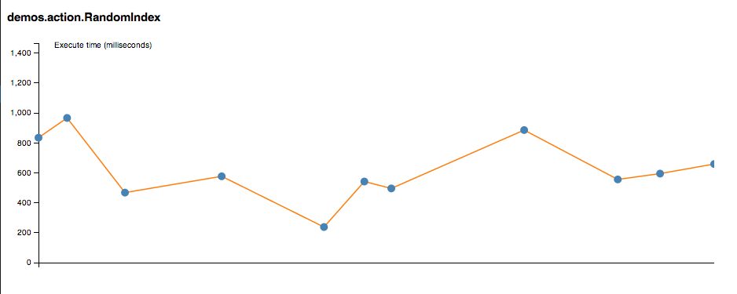

Xitrum 가이드¶

Xitrum 가이드는 영어, 일본어, 러시아어, 베트남어 버전으로 제공됩니다.
소개¶
+--------------------+
| Clients |
+--------------------+
|
+--------------------+
| Netty |
+--------------------+
| Xitrum |
| +----------------+ |
| | HTTP(S) Server | |
| |----------------| |
| | Web framework | | <- Akka, Hazelcast -> Other instances
| +----------------+ |
+--------------------+
| Your app |
+--------------------+
Xitrum은 Netty 와 Akka 를 기반으로 구축된 비동기적으로 확장 가능한 HTTP(S) Web 프레임웍입니다.
Xitrum 사용자 로 부터:
기능¶
Scala 사상에 기초한 Type-Safe. 모든 API는 Type-Safe하도록 디자인되어 있습니다.
Netty 사상에 기초한 비동기처리. 요청의 처리결과에 대한 액션을 곧바로 반환할 필요가 없습니다. Long polling, chunked response (스트리밍), WebSocket, SockJS을 지원합니다.
Netty 에 내장된 고속 HTTP(S) 서버. (HTTPS는Java엔진과 OpenSSL을 선택할 수 있습니다) Xitrum의 정적파일 전송속도는 Nginx 와 비슷합니다.
빠른 응답을 위한 광범위한 서버와 클라이언트 캐쉬. 웹 서버 측 에서는 작은 파일은 메모리에 캐쉬되고 큰 파일은 NIO의 zero copy를 사용하여 전송됩니다. 웹 프레임웍 측에서는 Rails스타일 처럼 page, action, object cache를 사용합니다. All Google’s best practices 에 있는것 처럼, 조건적으로 GET 에대해 클라이언트측 Cache가 적용됩니다. 물론 브라우저에 강제로 요청 및 재전송을 할 수 있습니다.
정적 파일에 대한 Range requests 지원. 이 기능으로 모바일에 동영상 전송이나 모든 클라이언트에게 파일 전송을 중지하거나 다시 시작할 수 있습니다.
CORS 지원.
JAX-RS 와 Rails엔진의 사상에 기초한 자동 라우트 수집. 모든 경로에 대해서 하나의 파일에 선언할 필요가 없습니다. 이 기능은 분산 라우팅을 위해 고려되었습니다. 이 기능으로 인해 어플리케이션을 다른 어플리케이션에 통합이 가능합니다. 만약 당신이 블로그엔진을 만든다면 그것을 JAR처럼 다른 어플리케이션으로 통합하는 즉시 블로그 기능을 사용할 수 있게 합니다. 라우팅에는 두 가지 특징이 있습니다. Type-Safe한 방법으로 URL을 재생성하거나(리버스 라우팅) Swagger Doc 을 이용하여 문서화 할 수 있습니다.
Develop Mode에서는 클래스 파일과 라우트 정보는 자동으로 갱신됩니다.
View는 독립적인 Scalate 템플릿이나 Scala의 인라인 XML로 작성되고 모두 Type-Safe합니다.
Cookie에 의한(더 확장가능한) Hazelcast 클러스터를 이용한(보다 안전한) 세션 관리. Hazelcast는, 매우 빠르고 쉬운, 프로세스간 분산 Cache도 제공합니다. 굳이 다른 캐시 서버를 준비 할 필요는 없습니다. 이것은 Akka의 pubsub 기능도 마찬가지입니다.
jQuery Validation 를 이용한 브라우저와 서버의 양쪽 검증.
GNU gettext 를 사용한 국제화. 텍스트의 추출과 번역이 자동으로 이루어져서 번잡한 속성 파일은 필요하지 않습니다. 번역과 통합작업에는 Poedit 와 같은 강력한 도구를 사용할 수 있습니다. gettext는 대부분의 다른 솔루션과 달리 단수와 복수 두 형식을 모두 지원하고 있습니다.
Xitrum은 Scalatra , Lift 두 가지 특징을 모두 사용하려고 합니다: Scalatra보다 강력하고 Lift보다 사용하기 쉬운 것이 특징입니다. Xitrum 은 많은 개발자에게 친숙한 controller-first를 사용하기 위해 Scalatra의 controller-first를 Lift의 view-first 를 적용하지 않았습니다.
연관된 프로젝트 샘플, 플러그인 등의 프로젝트 목록을 참고하세요.
튜토리얼¶
이 장에서는 Xitrum 프로젝트를 만들고 실행하는 데까지를 간단하게 소개합니다.
이 과정은 Java가 설치된 Linux 환경을 가정하고 있습니다.
Xitrum 프로젝트 만들기¶
새 프로젝트를 만들려면 xitrum-new.zip 를 다운로드 합니다.
wget -O xitrum-new.zip https://github.com/xitrum-framework/xitrum-new/archive/master.zip
또는:
curl -L -o xitrum-new.zip https://github.com/xitrum-framework/xitrum-new/archive/master.zip
시작하기¶
Scala 빌드 도구로써 사실상의 표준인 SBT 를 사용합니다.
방금 다운로드한 프로젝트에는 이미 SBT 0.13 이 sbt 디렉토리에 포함되어 있습니다.
SBT를 직접설치 하려면 SBT의 설치가이드 를 참고하세요.
생성한 프로젝트의 루트 디렉토리에 sbt/sbt fgRun 을 실행하면 Xitrum이 시작됩니다:
unzip xitrum-new.zip
cd xitrum-new
sbt/sbt fgRun
이 명령은 의존 라이브러리( dependencies )의 다운로드 및 프로젝트 컴파일 후에
quickstart.Boot 클래스가 실행되고 WEB서버가 시작됩니다.
콘솔에는 다음과 같은 라우팅 정보가 표시됩니다.
[INFO] Load routes.cache or recollect routes...
[INFO] Normal routes:
GET / quickstart.action.SiteIndex
[INFO] SockJS routes:
xitrum/metrics/channel xitrum.metrics.XitrumMetricsChannel websocket: true, cookie_needed: false
[INFO] Error routes:
404 quickstart.action.NotFoundError
500 quickstart.action.ServerError
[INFO] Xitrum routes:
GET /webjars/swagger-ui/2.0.17/index xitrum.routing.SwaggerUiVersioned
GET /xitrum/xitrum.js xitrum.js
GET /xitrum/metrics/channel xitrum.sockjs.Greeting
GET /xitrum/metrics/channel/:serverId/:sessionId/eventsource xitrum.sockjs.EventSourceReceive
GET /xitrum/metrics/channel/:serverId/:sessionId/htmlfile xitrum.sockjs.HtmlFileReceive
GET /xitrum/metrics/channel/:serverId/:sessionId/jsonp xitrum.sockjs.JsonPPollingReceive
POST /xitrum/metrics/channel/:serverId/:sessionId/jsonp_send xitrum.sockjs.JsonPPollingSend
WEBSOCKET /xitrum/metrics/channel/:serverId/:sessionId/websocket xitrum.sockjs.WebSocket
POST /xitrum/metrics/channel/:serverId/:sessionId/xhr xitrum.sockjs.XhrPollingReceive
POST /xitrum/metrics/channel/:serverId/:sessionId/xhr_send xitrum.sockjs.XhrSend
POST /xitrum/metrics/channel/:serverId/:sessionId/xhr_streaming xitrum.sockjs.XhrStreamingReceive
GET /xitrum/metrics/channel/info xitrum.sockjs.InfoGET
WEBSOCKET /xitrum/metrics/channel/websocket xitrum.sockjs.RawWebSocket
GET /xitrum/metrics/viewer xitrum.metrics.XitrumMetricsViewer
GET /xitrum/metrics/channel/:iframe xitrum.sockjs.Iframe
GET /xitrum/metrics/channel/:serverId/:sessionId/websocket xitrum.sockjs.WebSocketGET
POST /xitrum/metrics/channel/:serverId/:sessionId/websocket xitrum.sockjs.WebSocketPOST
[INFO] HTTP server started on port 8000
[INFO] HTTPS server started on port 4430
[INFO] Xitrum started in development mode
처음 실행시에는 모든 라우팅을 수집하여 로그에 기록합니다. 이 정보는 어플리케이션의 RESTful API에 대한 문서를 작성하는 경우에 이 정보는 매우 유용하게 사용될 수 있습니다.
브라우저에서 http://localhost:8000 또는 https://localhost:4430 에 접근하게 되면 다음과 같은 요청정보를 확인할 수 있습니다.
[INFO] GET quickstart.action.SiteIndex, 1 [ms]
Eclipse 프로젝트로 만들기¶
Eclipse 개발환경을 사용하는 경우
프로젝트 디렉토리에서 다음 명령을 실행합니다:
sbt/sbt eclipse
build.sbt 에 기재된 프로젝트 설정에 따라 Eclipse용 .project 파일이 생성됩니다.
Eclipse를 열고 프로젝트를 임포트 합니다.
IntelliJ IDEA 프로젝트 만들기¶
IntelliJ IDEA 개발환경을 사용하는 경우엔, 그 스칼라 플러그인을 설치하여 SBT프로젝트를 그대로 임포트 해주세요. 이클립스의 경우와 같이 사용전에 프로젝트 화일을 생성하지 않아도 됩니다.
자동 리로드¶
프로그램을 다시 시작하지 않고 .class 파일을 다시 로드（핫 스왑)할 수 있습니다. 그러나 프로그램의 성능과 안정성을 위하여 자동 리로드는 개발 시에만 사용하는 것을 권장합니다.
IDE를 사용하는 경우¶
최신의 Eclipse 나 IntelliJ와 같은 IDE를 사용해 개발하여 시작하는 경우에는 기본적으로 IDE가 소스코드의 변경을 감지하고 변경이 있을 경우에만 자동으로 컴파일해줍니다.
SBT를 사용하는 경우¶
SBT를 사용하는 경우에는 두 가지의 콘솔 창을 준비하여야 합니다:
하나는
sbt/sbt fgRun을 실행합니다. 이 명령은 프로그램을 실행하여 .class 파일에 변경이 있을 경우에만 다시 로드합니다.다른 하나는
sbt/sbt ~compile를 실행합니다. 이 명령은 소스 코드의 변경을 감지하여 변경이 있을 경우에만 .class 파일로 컴파일합니다.
sbt 디렉토리 agent7.jar 이 포함되어 있습니다.
이 라이브러리는 현재 디렉토리（및 하위 디렉토리)의 .class 파일 리로드를 담당합니다.
sbt/sbt 스크립트 중에 -javaagent:agent7.jar 로 사용되고 있습니다.
DCEVM¶
일반 JVM은 클래스 파일이 다시 로드되었을 때 메소드의 바디부분만 변경이 반영됩니다. 오픈소스인 DCEVM 의 Java HotSpot VM를 사용하여 로드된 클래스의 재정의를 보다 유연하게 할 수 있습니다.
DCEVM은 다음의 두 가지 방법으로 설치 할 수 있습니다:
패치를 사용하여 설치하는 경우:
DCEVM를 항상 활성화 할 수 있습니다.
또는 DCEVM 를 “alternative” JVM으로 적용할 수 있습니다. 이 경우에는
java명령에-XXaltjvm=dcevm옵션을 지정하여 DCEVM를 사용할 수 있습니다. 예를 들어,sbt/sbt스크립트 파일에-XXaltjvm=dcevm를 추가해야 합니다.
Eclipse나 IntelliJ와 같은 IDE를 사용하는 경우에는 DCEVM은 프로젝트의 실행 JVM를 지정해야 합니다.
SBT를 사용하는 경우에는 java 명령이 DCEVM를 사용할 수 있도록 PATH 환경변수를 지정해 줘야 합니다.
DCEVM는 자체 클래스의 변경을 지원하지만, 새로고침을 하지 않기 때문에, DCEVM를 사용하는 경우에도 javaagent 가 필요합니다.
자세한 내용은 DCEVM - A JRebel free alternative 를 참고하세요.
Action 과 view¶
유연함을 위해, Xitrum은 3가지 형태의 Action을 제공합니다.
보통 Action, FutureAction, ActorAction 입니다.
Normal Action¶
import xitrum.Action
import xitrum.annotation.GET
@GET("hello")
class HelloAction extends Action {
def execute() {
respondText("Hello")
}
}
요청은 Netty의 IO스레드로 직접로 처리되므로 시간이 걸리는 처리(블록처리)를 포함하면 안됩니다. Netty의 IO스레드를 오래 사용하게 되면 Netty는 새로운 연결을 할 수 없거나 응답을 회신할 수 없게 되기 때문입니다.
FutureAction¶
import xitrum.FutureAction
import xitrum.annotation.GET
@GET("hello")
class HelloAction extends FutureAction {
def execute() {
respondText("hi")
}
}
요청은 Netty의 스레드 풀과는 별개로 다음의 ActorAction 과 같은 스레드 풀에서 처리됩니다.
Actor Action¶
Action 을 Akka actor 처럼 정의하려면 ActorAction 을 상속하면 됩니다.
import scala.concurrent.duration._
import xitrum.ActorAction
import xitrum.annotation.GET
@GET("hello")
class HelloAction extends ActorAction {
def execute() {
// See Akka doc about scheduler
import context.dispatcher
context.system.scheduler.scheduleOnce(3 seconds, self, System.currentTimeMillis())
// See Akka doc about "become"
context.become {
case pastTime =>
respondInlineView(s"It's $pastTime Unix ms 3s ago.")
}
}
}
Actor 인스턴스는 요청이 발생할때 생성됩니다. 이 actor 인스턴스는 연결이 끊어지거나
respondText, respondView 등의 메소드를 통해 응답을 얻을때 중지됩니다.
청크응답의 경우 즉시 중지되지 않고 마지막 청크가 전송된 시점에서 중지됩니다.
요청은 “xitrum”이라고 불리는 Akka actor 시스템 스레드 풀에서 처리됩니다.
클라이언트로의 전송¶
Action으로 부터 클라이언트로 응답을 전송하려면 다음과 같은 방법을 사용합니다
respondView: 레이아웃을 포함하거나 포함하지 않고 View 템플릿을 전송합니다respondInlineView: 레이아웃을 포함하거나 포함하지 않고 인라인으로 작성된 템플릿을 전송합니다respondText("hello"): 레이아웃 파일을 사용하지 않고 문자열을 보냅니다respondHtml("<html>...</html>"): contentType을 “text/html” 형식으로 문자열을 보냅니다respondJson(List(1, 2, 3)): Scala 객체를 JSON으로 변환하여 contentType을 “application/json” 형식으로 보냅니다respondJs("myFunction([1, 2, 3])")contentType을 “application/javascript”으로 문자열을 보냅니다respondJsonP(List(1, 2, 3), "myFunction"): 위 두 가지를 조합하여 JSONP로 보냅니다respondJsonText("[1, 2, 3]"): contentType을 “application/javascript”으로 문자열을 보냅니다respondJsonPText("[1, 2, 3]", "myFunction"): respondJs, `respondJsonText`의 두 가지 조합을 JSONP로 보냅니다respondBinary: 바이트 배열로 보냅니다respondFile: 디스크에서 파일을 직접 보냅니다. zero-copy 를 사용하기 때문에 매우 빠릅니다.respondEventSource("data", "event"): 청크응답을 보냅니다
템플릿 View 파일 응답¶
모든 Action은 Scalate 의 템플릿 View 파일과 연관이 있습니다. 위의 응답방식을 사용하여 직접 응답을 보내는 대신 별도의 View파일을 사용하여 응답을 보낼 수 있습니다.
scr/main/scala/mypackage/MyAction.scala:
package mypackage
import xitrum.Action
import xitrum.annotation.GET
@GET("myAction")
class MyAction extends Action {
def execute() {
respondView()
}
def hello(what: String) = "Hello %s".format(what)
}
scr/main/scalate/mypackage/MyAction.jade:
- import mypackage.MyAction
!!! 5
html
head
!= antiCsrfMeta
!= xitrumCss
!= jsDefaults
title Welcome to Xitrum
body
a(href={url}) Path to the current action
p= currentAction.asInstanceOf[MyAction].hello("World")
!= jsForView
xitrumCssXitrum 의 기본 CSS파일입니다. 삭제해도 무방합니다.jsDefaultsjQuery, jQuery Validate plugin등을 포함하고 있습니다. <head>안에 명시해야 합니다.jsForViewjsAddToView에 의해 추가된 javascript가 출력됩니다. 레이아웃의 끝에 명시해야 합니다.
템플릿 파일에서 xitrum.Action 클래스의 모든 파일을 사용할 수 있습니다.
또한, unescape 같은 Scalate 유틸리티도 사용할 수 있습니다. Scalate의 유틸리티는 Scalate doc 를 참고하세요.
Scalate 템플릿의 기본 유형은 Jade 를 사용하고 있습니다. 또한 Mustache , Scaml , Ssp 를 선택할 수 있습니다. 템플릿의 기본 유형을 어플리케이션의 config 디렉토리내의 xitrum.conf 에서 설정할 수 있습니다.
respondView 메소드의 type 매개변수로 “jade”, “mustache”, “scaml”, “ssp” 중 하나를 지정하여 기본 템플릿 유형을 무시하고 사용할 수 있습니다.
val options = Map("type" ->"mustache")
respondView(options)
currentAction의 캐스팅¶
지금의 Action의 인스턴스를 정확하게 지정하려면 currentAction 를 지정한 Action 캐스팅합니다.
p= currentAction.asInstanceOf[MyAction].hello("World")
여러 줄로 사용하는 경우에 캐스트 처리를 한 번만 호출합니다.
- val myAction = currentAction.asInstanceOf[MyAction]; import myAction._
p= hello("World")
p= hello("Scala")
p= hello("Xitrum")
Mustache¶
Mustache에 대한 참고자료:
Mustach는 구문위반에 강력해서 Jade 에서 할 수 있는 작업중 일부는 사용할 수 없습니다.
Action 에서 뭔가 값을 전달할 경우에는 at 메소드를 사용합니다.
Action:
at("name") = "Jack"
at("xitrumCss") = xitrumCss
Mustache template:
My name is {{name}}
{{xitrumCss}}
주의:다음키는 예약어 이므로 at 메소드를 통해 Scalate 템플릿에 전달할 수 없습니다.
“context”:
unescape등의 메소드를 포함하여 Scalate 객체“helper”: 현재 Action 객체
CoffeeScript¶
:coffeescript filter 를 사용하여 CoffeeScript 템플릿에 배포할 수 있습니다.
body
:coffeescript
alert "Hello, Coffee!"
출력결과:
<body>
<script type='text/javascript'>
//<![CDATA[
(function() {
alert("Hello, Coffee!");
}).call(this);
//]]>
</script>
</body>
주의: 그러나 이 작업은 slow 문제가 있습니다.
jade+javascript+1thread: 1-2ms for page
jade+coffesscript+1thread: 40-70ms for page
jade+javascript+100threads: ~40ms for page
jade+coffesscript+100threads: 400-700ms for page
빠른속도로 동작시키기 위해서는 미리 CoffeeScript에서 Javascript를 생성해야 합니다.
레이아웃¶
respondView 또 respondInlineView 를 사용하여 View를 보낸 경우
Xitrum은 결과 문자열을 renderedView 변수로 설정합니다.
그리고 현재 Action의 layout 메소드가 실행됩니다.
브라우저에 전송되는 데이터는 결국 이 메소드의 결과가 표시됩니다.
기본적으로 layout 메소드는 단지 renderedView 를 호출합니다.
만약 이 처리방법에 무언가를 추가하려면 재정의가 필요합니다. 만약 renderedView 메소드에 포함하려는 경우에는
이 View의 레이아웃의 일부로 포함됩니다.
포인트는 layout 현재의 Action View가 실행된 후라는 것입니다.
여기에서 반환되는 값이 브라우저에 전달이 되는것 입니다.
이 메커니즘은 매우 간단하고 마법이 없습니다. 간단하게 Xitrum 에는 레이아웃이 존재하지 않는다고 생각할 수 있습니다.
여기에는 단지 layout 메소드가 있을 뿐 모두 이 방법으로 표현할 수 있습니다.
전형적인 예로 일반적인 레이아웃을 부모 클래스로 사용하는 패턴을 보여줍니다.
src/main/scala/mypackage/AppAction.scala
package mypackage
import xitrum.Action
trait AppAction extends Action {
override def layout = renderViewNoLayout[AppAction]()
}
src/main/scalate/mypackage/AppAction.jade
!!! 5
html
head
!= antiCsrfMeta
!= xitrumCss
!= jsDefaults
title Welcome to Xitrum
body
!= renderedView
!= jsForView
src/main/scala/mypackage/MyAction.scala
package mypackage
import xitrum.annotation.GET
@GET("myAction")
class MyAction extends AppAction {
def execute() {
respondView()
}
def hello(what: String) = "Hello %s".format(what)
}
scr/main/scalate/mypackage/MyAction.jade:
- import mypackage.MyAction
a(href={url}) Path to the current action
p= currentAction.asInstanceOf[MyAction].hello("World")
독립적인 레이아웃 파일을 사용하지 않는 패턴¶
AppAction.scala
import xitrum.Action
import xitrum.view.DocType
trait AppAction extends Action {
override def layout = DocType.html5(
<html>
<head>
{antiCsrfMeta}
{xitrumCss}
{jsDefaults}
<title>Welcome to Xitrum</title>
</head>
<body>
{renderedView}
{jsForView}
</body>
</html>
)
}
respondView 레이아웃을 직접 패스¶
val specialLayout = () =>
DocType.html5(
<html>
<head>
{antiCsrfMeta}
{xitrumCss}
{jsDefaults}
<title>Welcome to Xitrum</title>
</head>
<body>
{renderedView}
{jsForView}
</body>
</html>
)
respondView(specialLayout _)
Inline view¶
일반적인 Scalate 파일에 포함되지만 직접Action에 표기할 수 있습니다.
import xitrum.Action
import xitrum.annotation.GET
@GET("myAction")
class MyAction extends Action {
def execute() {
val s = "World" // Will be automatically HTML-escaped
respondInlineView(
<p>Hello <em>{s}</em>!</p>
)
}
}
Render fragment¶
MyAction.jade가
scr/main/scalate/mypackage/MyAction.jade
에 있는 경우 :
같은 디렉토리에 있는 조각파일을 반환하는 경우:
scr/main/scalate/mypackage/_MyFragment.jade
renderFragment[MyAction]("MyFragment")
현재 Action이 MyAction 의 경우에는 다음과 같이 생략이 가능합니다:
renderFragment("MyFragment")
다른 Action의 View를 응답하는 경우¶
다음의 메소드를 사용합니다 respondView[ClassName]():
package mypackage
import xitrum.Action
import xitrum.annotation.{GET, POST}
@GET("login")
class LoginFormAction extends Action {
def execute() {
// Respond scr/main/scalate/mypackage/LoginFormAction.jade
respondView()
}
}
@POST("login")
class DoLoginAction extends Action {
def execute() {
val authenticated = ...
if (authenticated)
redirectTo[HomeAction]()
else
// Reuse the view of LoginFormAction
respondView[LoginFormAction]()
}
}
하나의 Action - 여러 View사용¶
package mypackage
import xitrum.Action
import xitrum.annotation.GET
// These are non-routed actions, for mapping to view template files:
// scr/main/scalate/mypackage/HomeAction_NormalUser.jade
// scr/main/scalate/mypackage/HomeAction_Moderator.jade
// scr/main/scalate/mypackage/HomeAction_Admin.jade
trait HomeAction_NormalUser extends Action
trait HomeAction_Moderator extends Action
trait HomeAction_Admin extends Action
@GET("")
class HomeAction extends Action {
def execute() {
val userType = ...
userType match {
case NormalUser => respondView[HomeAction_NormalUser]()
case Moderator => respondView[HomeAction_Moderator]()
case Admin => respondView[HomeAction_Admin]()
}
}
}
위와 같이 라우팅과 상관없는 작업을 설명하는것이 어려워 보일수는 있지만 이 방법은 프로그램이 형식에 대해 안정성을 유지할 수 있습니다.
String 값을 이용하여 템블릿 위치를 지정할 수도 있습니다:
respondView("mypackage/HomeAction_NormalUser")
respondView("mypackage/HomeAction_Moderator")
respondView("mypackage/HomeAction_Admin")
Component¶
여러 View에 통합 할 수 있는 재사용이 가능한 구성요소를 생성 수 있습니다. 구성 요소의 개념은 액션과 매우 비슷합니다. 다음과 같은 특징이 있습니다.
구성요소는 루트가 없습니다. 즉
execute메소드는 필요가 없습니다.구성요소는 전체 응답을 반환하지 않습니다. 단편적인 view를 “render” 하기만 합니다. 따라서, 구성요소 내부에서
respondXXX대신renderXXX호출해야 합니다.Action처럼 구성요소는 단일 혹은 여러 View와 연관이 있거나 연관성 없이 사용할 수 있습니다.
package mypackage
import xitrum.{FutureAction, Component}
import xitrum.annotation.GET
class CompoWithView extends Component {
def render() = {
// Render associated view template, e.g. CompoWithView.jade
// Note that this is renderView, not respondView!
renderView()
}
}
class CompoWithoutView extends Component {
def render() = {
"Hello World"
}
}
@GET("foo/bar")
class MyAction extends FutureAction {
def execute() {
respondView()
}
}
MyAction.jade:
- import mypackage._
!= newComponent[CompoWithView]().render()
!= newComponent[CompoWithoutView]().render()
RESTful APIs¶
Xitrum으로 iPhone, Android 등의 앱을 위한 RESTful APIs를 간단하게 만들 수 있습니다.
import xitrum.Action
import xitrum.annotation.GET
@GET("articles")
class ArticlesIndex extends Action {
def execute() {...}
}
@GET("articles/:id")
class ArticlesShow extends Action {
def execute() {...}다
}
POST, PUT, PATCH, DELETE, OPTIONS 뿐만 아니라 Xitrum은 HEAD의 GET 요청을 빈 바디응답으로 자동으로 처리합니다.
일반 브라우저처럼 PUT과 DELETE를 지원하지 않는 HTTP 클라이언트에서도
PUT과 DELETE를 구현하려면 응답 본문에 _method=put 나 _method=delete 를 포함하여
사용할 수 있습니다.
어플리케이션을 시작할때 Xitrum 어플리케이션을 스캔하여 라우팅 테이블을 만들고 출력합니다. 다음과 같은 로그에서 어플리케이션이 어떤 API를 지원하고 있는지 알 수 있습니다.
[INFO] Routes:
GET /articles quickstart.action.ArticlesIndex
GET /articles/:id quickstart.action.ArticlesShow
라우팅은 JAX-RS과 Rails의 철학에 따라 자동으로 수집됩니다. 모든 경로를 한군데에 설정할 필요가 없습니다. 분산 라우팅처럼 이 기능 덕분에 어플리케이션을 다른 어플리케이션에 통합할 수 있습니다. 만약 블로그 엔진을 만든다면 패키징된 JAR파일을 다른 어플리케이션으로 가져와서 즉시 블로그 기능을 사용할 수 있습니다. 라우팅에는 두 가지 특징이 있습니다. 안전한 방법으로 루트를 재생성하거나(리버스 라우팅) Swagger Doc 이라고 하는 문서를 통해서 만들 수 있습니다.
루트 캐싱¶
어플리케이션 시작시 속도 향상을 위해 루트는 routes.cache 파일에 캐쉬됩니다.
개발 시에는 target 파일에 있는 클래스 파일의 루트는 캐쉬되지 않습니다.
만약 루트를 포함하여 라이브러리가 업데이트 된 경우에는 routes.cache 파일을 삭제하세요.
또한, 이 파일은 소스 저장소에 커밋되지 않도록 주의해야 합니다.
루트의 우선순위(first, last)¶
다음과 같은 루트를 만든 경우
/articles/:id --> ArticlesShow
/articles/new --> ArticlesNew
두 번째 루트를 우선시 할 경우 @First 주석을 추가시킵니다.
import xitrum.annotation.{GET, First}
@GET("articles/:id")
class ArticlesShow extends Action {
def execute() {...}
}
@First // This route has higher priority than "ArticlesShow" above
@GET("articles/new")
class ArticlesNew extends Action {
def execute() {...}
}
Last 도 똑같이 사용할 수 있습니다.
Action에 여러 경로를 연동¶
@GET("image", "image/:format")
class Image extends Action {
def execute() {
val format = paramo("format").getOrElse("png")
// ...
}
}
점을 포함하는 루트¶
@GET("articles/:id", "articles/:id.:format")
class ArticlesShow extends Action {
def execute() {
val id = param[Int]("id")
val format = paramo("format").getOrElse("html")
// ...
}
}
경로의 나머지 부분 이용¶
/ 문자는 특수문자라서 매개변수에 포함되지 않습니다. / 문자를 사용하려면 다음과 같이 씁니다:
GET("service/:id/proxy/:*")
다음의 경로를 가져오게 됩니다:
/service/123/proxy/http://foo.com/bar
:* 를 가져오게 됩니다:
val url = param("*") // "http://foo.com/bar" 입니다
액션에 링크추가¶
Xitrum은 typesafe하므로 URL을 직접 사용하면 안 됩니다. 다음처럼 사용하세요:
<a href={url[ArticlesShow]("id" -> myArticle.id)}>{myArticle.title}</a>
다른 액션으로 리디랙션¶
import xitrum.Action
import xitrum.annotation.{GET, POST}
@GET("login")
class LoginInput extends Action {
def execute() {...}
}
@POST("login")
class DoLogin extends Action {
def execute() {
...
// After login success
redirectTo[AdminIndex]()
}
}
GET("admin")
class AdminIndex extends Action {
def execute() {
...
// Check if the user has not logged in, redirect him to the login page
redirectTo[LoginInput]()
}
}
현재 액션을 다음을 이용하여 변경할 수도 있습니다. redirecToThis().
다른 액션에 요청 전달¶
forwardTo[AnotherAction]()사용시에는redirectTo은 다른 요청을 만들어서 전달하지만forwardTo는 요청이 유지됩니다.
Ajax 요청 여부 확인¶
isAjax을 사용합니다.
// In an action
val msg = "A message"
if (isAjax)
jsRender("alert(" + jsEscape(msg) + ")")
else
respondText(msg)
Anti-CSRF¶
GET 이외의 요청에 Xitrum은 기본적으로 Cross-site request forgery 방식을 고수합니다.
antiCsrfMeta Tags의 레이아웃에 명시한 경우:
import xitrum.Action
import xitrum.view.DocType
trait AppAction extends Action {
override def layout = DocType.html5(
<html>
<head>
{antiCsrfMeta}
{xitrumCss}
{jsDefaults}
<title>Welcome to Xitrum</title>
</head>
<body>
{renderedView}
{jsForView}
</body>
</html>
)
}
출력되는 <head> 는 다음과 같습니다:
<!DOCTYPE html>
<html>
<head>
...
<meta name="csrf-token" content="5402330e-9916-40d8-a3f4-16b271d583be" />
...
</head>
...
</html>
- xitrum.js 이 템플릿 내에서 사용되는 경우,
토큰은 GET 요청을 제외한 모든 jQuery 의 Ajax 요청에
X-CSRF-Token을 포함합니다.
xitrum.js은 jsDefaults 에 포함되어 있습니다.
만약 jsDefaults 를 사용하지 않고 xitrum.js를 사용하고 싶다면 다음과 같이 사용합니다.
<script type="text/javascript" src={url[xitrum.js]}></script>
antiCsrfInput 과 antiCsrfToken¶
Xitrum은 CSRF토큰을 X-CSRF-Token 의 요청헤더에서 가져옵니다.
만약 요청헤더가 없다면 csrf-token 의 바디 파라미터에서 가져옵니다.
（URL의 파라미터가 아닙니다）
Form을 직접 작성할 때에 메타 태그와 xitrum.js을 사용하지 않는다면 antiCsrfInput 또는
antiCsrfToken 을 사용해야 합니다.
form(method="post" action={url[AdminAddGroup]})
!= antiCsrfInput
form(method="post" action={url[AdminAddGroup]})
input(type="hidden" name="csrf-token" value={antiCsrfToken})
CSRF 체크 생략¶
스마트폰과 같은 기기를 위해서 API를 작성할 경우 CSRF체크를 생략할 수 있습니다.
xitrum.SkipCsrfCheck 를 Action에 추가하면 됩니다.
import xitrum.{Action, SkipCsrfCheck}
import xitrum.annotation.POST
trait Api extends Action with SkipCsrfCheck
@POST("api/positions")
class LogPositionAPI extends Api {
def execute() {...}
}
@POST("api/todos")
class CreateTodoAPI extends Api {
def execute() {...}
}
라우팅 조작¶
Xitrum 은 시작 시에 자동으로 경로를 수집합니다. 경로를 수정하고 싶다면 다음을 이용하세요 xitrum.Config.routes.
Example:
import xitrum.{Config, Server}
object Boot {
def main(args: Array[String]) {
// You can modify routes before starting the server
val routes = Config.routes
// Remove routes to an action by its class
routes.removeByClass[MyClass]()
if (demoVersion) {
// Remove routes to actions by a prefix
routes.removeByPrefix("premium/features")
// This also works
routes.removeByPrefix("/premium/features")
}
...
Server.start()
}
}
요청 내용 가져오기¶
요청에 대한 타입이 application/x-www-form-urlencoded 이 아닐 경우에는
요청에 대한 내용을 가져오고 수동으로 파싱이 가능합니다.
문자열로 가져오기:
val body = requestContentString
문자열로 가져와서 JSON형식으로 변경합니다:
val myJValue = requestContentJValue // => JSON4S (http://json4s.org) JValue
val myMap = xitrum.util.SeriDeseri.fromJValue[Map[String, Int]](myJValue)
요청 전체를 컨트롤 하려면 request.getContent 을 사용하면 됩니다. ByteBuf 타입으로 리턴합니다.
Swagger로 API 문서화 하기¶
Swagger 를 이용하여 API문서를 만들수 있습니다.
@Swagger 태그를 문서화하고 싶은 API에 명시하면 됩니다.
Xitrum은 문서파일을 /xitrum/swagger.json 에 생성합니다.
이 파일들은 Swagger UI 를 이용하여 인터렉티브한 API문서를 생성합니다.
Xitrum은Swagger UI 를 내포하고 있으며 /xitrum/swagger-ui 에서 확인할 수 있습니다.
: http://localhost:8000/xitrum/swagger-ui.
예제 는 여기에 있습니다.
import xitrum.{Action, SkipCsrfCheck}
import xitrum.annotation.{GET, Swagger}
@Swagger(
Swagger.Tags("image", "APIs to create images"),
Swagger.Description("Dimensions should not be bigger than 2000 x 2000"),
Swagger.OptStringQuery("text", "Text to render on the image, default: Placeholder"),
Swagger.Produces("image/png"),
Swagger.Response(200, "PNG image"),
Swagger.Response(400, "Width or height is invalid or too big")
)
trait ImageApi extends Action with SkipCsrfCheck {
lazy val text = paramo("text").getOrElse("Placeholder")
}
@GET("image/:width/:height")
@Swagger( // <-- Inherits other info from ImageApi
Swagger.Summary("Generate rectangle image"),
Swagger.IntPath("width"),
Swagger.IntPath("height")
)
class RectImageApi extends Api {
def execute {
val width = param[Int]("width")
val height = param[Int]("height")
// ...
}
}
@GET("image/:width")
@Swagger( // <-- Inherits other info from ImageApi
Swagger.Summary("Generate square image"),
Swagger.IntPath("width")
)
class SquareImageApi extends Api {
def execute {
val width = param[Int]("width")
// ...
}
}
/xitrum/swagger 에 접근할때
JSON For Swagger
가 생성됩니다.
Swagger UI는 이 JSON 정보를 바탕으로 인터랙티브한 API 문서를 만듭니다.
여기에 있는 Swagger.IntPath, Swagger.OptStringQuery, 이외에도 BytePath, IntQuery, OptStringForm 등이 form에 명시되어 있습니다.
<Value type><Param type>(필수 값)Opt<Value type><Param type>(옵션 값)
Value type: Byte, Int, Int32, Int64, Long, Number, Float, Double, String, Boolean, Date, DateTime
Param type: Path, Query, Body, Header, Form
자세한 내용은 value type , param type 를 참고하세요.
템플릿 엔진¶
renderView 이나 renderFragment, respondView 이 호출되면 설정된 템플릿 엔진이 호출됩니다.
템플릿 엔진 설정¶
config/xitrum.conf 에서 템플릿 엔진은 그 형식에 따라서 다음과 같이 두 종류로 설정이 가능합니다.
template = my.template.EngineClassName
또는:
template {
"my.template.EngineClassName" {
option1 = value1
option2 = value2
}
}
기본 템플릿 엔진은 xitrum-scalate 입니다.
템플릿 엔진 제거¶
단지 RESTful API만을 만들 경우에 renderView, renderFragment, respondView를 호출할 필요가 없습니다. 이 경우 템플릿 엔진을 프로젝트에서 삭제해서 프로젝트를 더 가볍게 만들 수 있습니다.
방법은 config/xitrum.conf 에서 templateEngine 을 지우거나 주석 처리하세요.
템플릿 엔진 만들기¶
나민의 템플릿 엔진을 만들려면 xitrum.view.TemplateEngine 을 상속받아 클래스를 만듭니다. 그리고 나서 config/xitrum.conf 에 명시하면 됩니다.
예제: xitrum-scalate
포스트백¶
Web 어플리케이션은 다음과 같은 두 가지 경우로 많이 사용됩니다.
서버를 위해 사용하는 경우: 스마트폰을 위한 RESTful API를 만들거나, 다른 웹사이트를 위한 웹서비
사람을 위해 사용하는 경우: 인터랙티브한 웹 서비스
Web 프레임워크를 기반으로 Xitrum은 이 두가지를 쉽게 사용할 수 있는것을 목표로 하고 있습니다. 1번째 케이스를 사용하기 위해서、RESTful actions 를 적용하여 대응하고、 2번째 케이스를 사용하기 위해、Ajax폼을 사용하고 있습니다. 아래 링크에서 postback에 대한 개념을 알 수 있습니다.
Xitrum은 Nitrogen 영향을 받아서 작성되었습니다.
레이아웃¶
AppAction.scala
import xitrum.Action
import xitrum.view.DocType
trait AppAction extends Action {
override def layout = DocType.html5(
<html>
<head>
{antiCsrfMeta}
{xitrumCss}
{jsDefaults}
<title>Welcome to Xitrum</title>
</head>
<body>
{renderedView}
{jsForView}
</body>
</html>
)
}
폼¶
Articles.scala
import xitrum.annotation.{GET, POST, First}
import xitrum.validator._
@GET("articles/:id")
class ArticlesShow extends AppAction {
def execute() {
val id = param("id")
val article = Article.find(id)
respondInlineView(
<h1>{article.title}</h1>
<div>{article.body}</div>
)
}
}
@First // Force this route to be matched before "show"
@GET("articles/new")
class ArticlesNew extends AppAction {
def execute() {
respondInlineView(
<form data-postback="submit" action={url[ArticlesCreate]}>
<label>Title</label>
<input type="text" name="title" class="required" /><br />
<label>Body</label>
<textarea name="body" class="required"></textarea><br />
<input type="submit" value="Save" />
</form>
)
}
}
@POST("articles")
class ArticlesCreate extends AppAction {
def execute() {
val title = param("title")
val body = param("body")
val article = Article.save(title, body)
flash("Article has been saved.")
jsRedirectTo(show, "id" -> article.id)
}
}
submit 이벤트가 JavaScript 에서 실행될 때, 폼은 ArticlesCreate 으로 postback을 보냅니다.
<form> 의 action 속성은 암호화 되고 암호화된 URL은 CSRF토큰 대신 사용하게 됩니다.
form 이외의 사용¶
포스트백은 form이 아닌 HTML 요소에서 사용이 가능합니다.
링크를 사용하는 예제:
<a href="#" data-postback="click" action={url[LogoutAction]}>Logout</a>
링크를 클릭하게 되면 LogoutAction으로 포스트백 메세지를 보냅니다.
확인 다이얼로그¶
확인 다이얼로그를 표시하고 싶은 경우:
<a href="#" data-postback="click"
action={url[LogoutAction]}
data-confirm="Do you want to logout?">Logout</a>
사용자가 취소를 클릭하게 되면 postback 메세지는 보내지 않습니다.
매개 변수 추가¶
form의 요소중 <input type="hidden"... 를 추가하여 추가 매개변수를 postback메세지로 보낼 수 있습니다.
form요소 이외의 경우에는 다음과 같이 사용하면 됩니다:
<a href="#"
data-postback="click"
action={url[ArticlesDestroy]("id" -> item.id)}
data-params="_method=delete"
data-confirm={"Do you want to delete %s?".format(item.name)}>Delete</a>
또는 다음과 같이 다른 요소에 지정할 수 있습니다:
<form id="myform" data-postback="submit" action={url[SiteSearch]}>
Search:
<input type="text" name="keyword" />
<a class="pagination"
href="#"
data-postback="click"
data-form="#myform"
action={url[SiteSearch]("page" -> page)}>{page}</a>
</form>
#myform 은 JQuery의 선택요소로 폼의 추가 파라미터를 선택하여 보내게 됩니다.
Ajax로딩중 이미지 로딩¶
아래의 로딩 이미지가 Ajax 통신중에 표시됩니다:

커스터마이즈 시에 템플릿 내에 jsDefaults (이것은 xitrum.js
를 포함하기 위한 함수입니다.)의 뒤에 다음 내용을 추가합니다:
// target: The element that triggered the postback
xitrum.ajaxLoading = function(target) {
// Called when the animation should be displayed when the Ajax postback is being sent.
var show = function() {
...
};
// Called when the animation should be stopped after the Ajax postback completes.
var hide = function() {
...
};
return {show: show, hide: hide};
};
XML¶
Scala는 리터럴 문자를 표시할 수 있습니다. Xitrum에서는 이 기능을 템플릿 엔진으로 사용하고 있습니다.
Scala는 XML 구문을 컴파일 때 체크합니다: View는 typesafe합니다.
Scala는 XML의 자동적으로 이스케이프하여 XSS 공격을 방지합니다.
일부 팁이 있습니다.
XML의 이스케이프¶
scala.xml.Unparsed 를 사용하는 경우:
import scala.xml.Unparsed
<script>
{Unparsed("if (1 < 2) alert('Xitrum rocks');")}
</script>
<xml:unparsed> 를 사용하는 경우:
<script>
<xml:unparsed>
if (1 < 2) alert('Xitrum rocks');
</xml:unparsed>
</script>
<xml:unparsed> 는 실제 출력에 포함되지 않습니다:
<script>
if (1 < 2) alert('Xitrum rocks');
</script>
XML 요소의 그룹화¶
<div id="header">
{if (loggedIn)
<xml:group>
<b>{username}</b>
<a href={url[LogoutAction]}>Logout</a>
</xml:group>
else
<xml:group>
<a href={url[LoginAction]}>Login</a>
<a href={url[RegisterAction]}>Register</a>
</xml:group>}
</div>
<xml:group> 는 실제 출력에 포함되지 않습니다. 예를 들어 사용자가 로그인한 경우:
<div id="header">
<b>My username</b>
<a href="/login">Logout</a>
</div>
XHTML 렌더링¶
Xitrum은 view 와 레이아웃을 자동으로 XHTML로 출력합니다. 이것을 직접 출력으로 표시할경우 드믈지만 다음 코드가 나타나는 것을 주의하세요.
import scala.xml.Xhtml
val br = <br />
br.toString // => <br></br>, 이 경우에 브라우저는 br태그가 두 개 있다고 판단합니다.
Xhtml.toXhtml(<br />) // => "<br />"
JavaScript 와 JSON¶
JavaScript¶
Xitrum은 jQuery를 내포하고 있습니다.
또한 일부 jsXXX 헬퍼도 제공하고 있습니다.
JavaScript 조각을 View에 추가하는 방법¶
액션 내에서 jsAddToView 를 호출합니다.（필요한 경우 여러 번 호출이 가능합니다）:
class MyAction extends AppAction {
def execute() {
...
jsAddToView("alert('Hello')")
...
jsAddToView("alert('Hello again')")
...
respondInlineView(<p>My view</p>)
}
}
레이아웃 내에서 jsForView 를 호출합니다:
import xitrum.Action
import xitrum.view.DocType
trait AppAction extends Action {
override def layout = DocType.html5(
<html>
<head>
{antiCsrfMeta}
{xitrumCss}
{jsDefaults}
</head>
<body>
<div id="flash">{jsFlash}</div>
{renderedView}
{jsForView}
</body>
</html>
)
JavaScript를 직접 호출하는 경우¶
Javascript의 응답:
jsRespond("$('#error').html(%s)".format(jsEscape(<p class="error">Could not login.</p>)))
Javascript로 리다이렉션하는 경우:
jsRedirectTo("http://cntt.tv/")
jsRedirectTo[LoginAction]()
JSON¶
Xitrum은 JSON4S 를 내포하고 있습니다. JSON의 파싱과 생성은 JSON4S을 읽어보세요.
Scala의 case 객체를 JSON으로 변환하는 경우:
import xitrum.util.SeriDeseri
case class Person(name: String, age: Int, phone: Option[String])
val person1 = Person("Jack", 20, None)
val json = SeriDeseri.toJson(person)
val person2 = SeriDeseri.fromJson(json)
JSON의 응답:
val scalaData = List(1, 2, 3) // An example
respondJson(scalaData)
JSON은 중첩된 구조로 되어 있는 문장을 만들기에 적합합니다.
참고 설정 파일 읽어들이기
비동기 응답¶
Action에서 클라이언트로 응답을 반환하려면 다음과 같은 방법을 사용합니다.
respondView: 레이아웃 파일을 사용 또는 사용하지 않고 View의 템플릿 파일을 보냅니다.respondInlineView: 레이아웃 파일을 사용 또는 사용하지 않고 인라인 작성된 템플릿을 보냅니다.respondText("hello"): 레이아웃 파일을 사용하지 않고 텍스트를 보냅니다.respondHtml("<html>...</html>"): 위와 같이 contentType을 “text/html”로 보냅니다.respondJson(List(1, 2, 3)): Scala 객체를 JSON 으로 변환하여 contentType을 “application/json”으로 보냅니다.respondJs("myFunction([1, 2, 3])")contentType을 “application/javascript”으로 보냅니다.respondJsonP(List(1, 2, 3), "myFunction"): 위 두가지 조합을 JSONP 으로 보냅니다.respondJsonText("[1, 2, 3]"): contentType을 “application/javascript”으로 보냅니다.respondJsonPText("[1, 2, 3]", "myFunction"): respondJs, respondJsonText 의 두 가지 조합을 JSONP로 보냅니다.respondBinary: 바이트 배열로 보냅니다.respondFile: 디스크에서 파일을 직접 보냅니다. zero-copy 를 사용하기 때문에 빠릅니다.respondEventSource("data", "event"): 청크 응답을 보냅니다.
Xitrum은 자동으로 어떤 특정한 응답을 하지 않습니다. 스스로 응답을 respondXXX 형식으로 명시해야 합니다.
respondXXX 을 호출하지 않을 경우 Xitrum은 HTTP 연결을 유지하기 때문에 나중에 respondXXX 형식의 호출문이 필요합니다.
연결이 open 상태로 되어 있는지 확인하려면 channel.isOpen 을 호출하면 됩니다. addConnectionClosedListener
를 사용해도 무방합니다.
addConnectionClosedListener {
// 연결이 해제되었습니다.
// 이벤트로부터 자원을 해제합니다.
}
비동기 방식이므로 응답을 바로 전송하지 않습니다. respondXXX 의 반환값은
ChannelFuture
를 사용합니다. 이것을 통해 실제로 전송되는 콜백을 지정할 수 있습니다.
예를 들어, 응답의 전송 후에 연결을 해제하려면:
import io.netty.channel.{ChannelFuture, ChannelFutureListener}
val future = respondText("Hello")
future.addListener(new ChannelFutureListener {
def operationComplete(future: ChannelFuture) {
future.getChannel.close()
}
})
더 짧은 예:
respondText("Hello").addListener(ChannelFutureListener.CLOSE)
WebSocket¶
import scala.runtime.ScalaRunTime
import xitrum.annotation.WEBSOCKET
import xitrum.{WebSocketAction, WebSocketBinary, WebSocketText, WebSocketPing, WebSocketPong}
@WEBSOCKET("echo")
class EchoWebSocketActor extends WebSocketAction {
def execute() {
// 여기에서 세션데이터, 요청해더 등을 추출할 수 있지만
// respondText 나 respondView를 사용하면 안됩니다.
// 응답하려면 다음과 같이 respondWebSocketXXX를 사용하세요.
log.debug("onOpen")
context.become {
case WebSocketText(text) =>
log.info("onTextMessage: " + text)
respondWebSocketText(text.toUpperCase)
case WebSocketBinary(bytes) =>
log.info("onBinaryMessage: " + ScalaRunTime.stringOf(bytes))
respondWebSocketBinary(bytes)
case WebSocketPing =>
log.debug("onPing")
case WebSocketPong =>
log.debug("onPong")
}
}
override def postStop() {
log.debug("onClose")
super.postStop()
}
}
요청이 올때 위의 액터가 생성됩니다. 그리고 다음의 경우 중단됩니다:
연결이 끊긴경우
WebSocket의 close 프레임이 수신되거나 전송되었을 때
WebSocket 프레임을 전송하는 경우:
respondWebSocketTextrespondWebSocketBinaryrespondWebSocketPingrespondWebSocketClose
respondWebSocketPong 은 없습니다. Xitrum이 ping 을 수신하게 되면 자동으로 pong 프레임을 전송하기 때문입니다.
위의 WebSocket 액션의 URL을 얻으려면:
// Scalate 템플릿 파일을 사용하기 원한다면
val url = absWebSocketUrl[EchoWebSocketActor]
SockJS¶
- SockJS 은 WebSocket을 지원하지 않는 브라우저를 위한
WebSocket 과 같은 API를 제공하는 JavaScript라이브러리 입니다. SockJS는 먼저 WebSocket를 시도해보고 실패할경우 다른 방법들을 통해 WebSocket과 같은 라이브러리들을 사용하게 됩니다.
만약 모든 브라우저에서 WebSocket API를 사용하고 싶다면 SockJS을 사용하되 WebSocket을 직접 사용하지 마세요.
<script>
var sock = new SockJS('http://mydomain.com/path_prefix');
sock.onopen = function() {
console.log('open');
};
sock.onmessage = function(e) {
console.log('message', e.data);
};
sock.onclose = function() {
console.log('close');
};
</script>
Xitrum은 SockJS의 JavsScript 파일을 내포하고 있습니다. 뷰 템플릿에서 다음과 같이 사용하면 됩니다:
...
html
head
!= jsDefaults
...
SockJS는 server counterpart 가 필요하지 않습니다. Xitrum이 자동으로 제공합니다.
import xitrum.{Action, SockJsAction, SockJsText}
import xitrum.annotation.SOCKJS
@SOCKJS("echo")
class EchoSockJsActor extends SockJsAction {
def execute() {
// 응답을 위해 아래에 respondSockJSXXX를 사용합니다.
log.info("onOpen")
context.become {
case SockJsText(text) =>
log.info("onMessage: " + text)
respondSockJsText(text)
}
}
override def postStop() {
log.info("onClose")
super.postStop()
}
}
새로운 SockJS 세션이 생성될 때에 위의 액터 인스턴스가 생성됩니다. 세션이 정지될 때에는 액터가 정지됩니다.
SockJS 프레임으로 보내려면:
respondSockJsTextrespondSockJsClose
기본적으로 쿠키는 SockJS 모델과 맞지가 않습니다. 세션 인증을 하려면 고유의 토큰을 SockJS를
통해 서버 측에서 검증을 해야 합니다. 이것이 본질적으로 쿠키의 작동원리입니다
SockJS 클러스터링을 구현하려면 Akka 클러스터링 을 참고하세요.
Chunk응답¶
Chunk응답 을 보내려면:
setChunked호출respondXXX호출(필요한 만큼)마지막으로
respondLastChunk호출
Chunk응답은 많은 유스케이스를 가지고 있습니다. 예를 들어 메모리에 맞지 않는 매우큰 CSV파일을 생성할때 Chunk별로 생성해서 보낼 수 있습니다.
// "Cache-Control" 헤더가 자동으로 세팅됩니다:
// 「no-store, no-cache, must-revalidate, max-age=0」
//
// 덧붙여서 "Pragma: no-cache" 는 응답이 아닌 요청에 링크됩니다:
// http://palizine.plynt.com/issues/2008Jul/cache-control-attributes/
setChunked()
val generator = new MyCsvGenerator
generator.onFirstLine { line =>
val future = respondText(header, "text/csv")
future.addListener(new ChannelFutureListener {
def operationComplete(future: ChannelFuture) {
if (future.isSuccess) generator.next()
}
}
}
generator.onNextLine { line =>
val future = respondText(line)
future.addListener(new ChannelFutureListener {
def operationComplete(future: ChannelFuture) {
if (future.isSuccess) generator.next()
}
})
}
generator.onLastLine { line =>
val future = respondText(line)
future.addListener(new ChannelFutureListener {
def operationComplete(future: ChannelFuture) {
if (future.isSuccess) respondLastChunk()
}
})
}
generator.generate()
주의:
헤더는
respondXXX을 먼저 요청합니다.마지막 헤더 옵션을
respondLastChunk에 설정할 수 있습니다.페이지와 액션 캐쉬 는 chunk 응답으로 사용할 수 없습니다.
Chunk응답을 ActorAction 과 함께 사용하려면
Facebook BigPipe
을 통해 쉽게 구현할 수 있습니다.
무한 iframe¶
청크 응답은 Comet 을 사용할 수 있습니다
iframe을 포함한 페이지:
...
<script>
var functionForForeverIframeSnippetsToCall = function() {...}
</script>
...
<iframe width="1" height="1" src="path/to/forever/iframe"></iframe>
...
무한 <script> 생성하는 페이지:
// 준비
setChunked()
// Firefox를 동작하기 위해 "123" 등을 사용
respondText("<html><body>123", "text/html")
// curl을 포함한 대부분의 클라이언트는 script를 미리보기로 바로 사용할 수 없음.
// 2KB의 더미 데이터를 바로 보내볼 필요가 있음.
for (i <- 1 to 100) respondText("<script></script>\n")
나중에 실제 데이터를 브라우저에 보내려면, 미리보기를 보내면 된다:
if (channel.isOpen)
respondText("<script>parent.functionForForeverIframeSnippetsToCall()</script>\n")
else
// 연결이 종료되고, 이벤트가 해제됨
// ``addConnectionClosedListener`` 을 사용할수 있음.
Event Source¶
참고: http://dev.w3.org/html5/eventsource/
Event Source는 특별한 경우 chunk응답을 보냄. 데이터는 UTF-8 이어야 함.
Event Source를 응답하려면 respondEventSource 호출(필요한 만큼):
respondEventSource("data1", "event1") // event1의 이벤트 이름
respondEventSource("data2") // message라는 이벤트 이름으로 기본설정됨
정적 파일¶
디스크의 정적 파일 전송¶
프로젝트 디렉토리의 레이아웃:
config
public
favicon.ico
robots.txt
404.html
500.html
img
myimage.png
css
mystyle.css
js
myscript.js
src
build.sbt
Xitrum은 public 디렉토리의 정적 파일들을 자동으로 제공합니다.
URLs는 다음과 같이 사용합니다:
/img/myimage.png
/css/mystyle.css
/css/mystyle.min.css
참조하려면:
<img src={publicUrl("img/myimage.png")} />
일반 파일을 개발환경에서 사용하고 압축된 버전의 파일을 프로덕션 환경에서 사용하려면 (위의 mystyle.css와 mystyle.min.css):
<img src={publicUrl("css", "mystyle.css", "mystyle.min.css")} />
디스크의 정적 파일을 액션을 통해 전송하려면 respondFile 을 사용합니다.
respondFile("/absolute/path")
respondFile("path/relative/to/the/current/working/directory")
정적 파일의 전송 속도를 최적화 하기 위해 정규식 필터를 통해, 불필요한 파일의 존재를 체크하여 미연에 방지할 수 있습니다. 만약 요청된 URL이 pathRegex와 맞지 않으면 Xitrum은 해당 요청에 404를 응답합니다.
config/xitrum.conf 의 pathRegex 를 참고하세요.
index.html 대체¶
만약 /foo/bar (또는 /foo/bar/) URL의 경로(액션)가 없을 경우
Xitrum은 public/foo/bar/index.html (“public” 디렉토리) 경로의 정적 파일을 탐색합니다.
파일이 존재하면 Xitrum은 해당파일을 클라이언트로 응답합니다.
404 과 500¶
요청에 대해 적합한 경로가 없거나 에러가 발생한 경우에는 public 디렉토리에 있는 404.html과 500.html이 사용됩니다.
핸들러를 직접 등록하고 싶은 경우:
import xitrum.Action
import xitrum.annotation.{Error404, Error500}
@Error404
class My404ErrorHandlerAction extends Action {
def execute() {
if (isAjax)
jsRespond("alert(" + jsEscape("Not Found") + ")")
else
renderInlineView("Not Found")
}
}
@Error500
class My500ErrorHandlerAction extends Action {
def execute() {
if (isAjax)
jsRespond("alert(" + jsEscape("Internal Server Error") + ")")
else
renderInlineView("Internal Server Error")
}
}
응답에 대한 요청은 액션이 수행되기 전에 404과 500이 세팅되므로 임의로 세팅할 필요가 없습니다.
WebJar에 의한 클래스 패스내의 리소스 파일 전송¶
WebJars¶
WebJars 는 상당량의 웹 라이브러리를 제공하고 프로젝트 내에서 정의해 사용할 수 있습니다.
예를 들어 Underscore.js 를 사용하고자 하는 경우에는
프로젝트의 build.sbt 내에 정의하면 됩니다.
libraryDependencies += "org.webjars" % "underscorejs" % "1.6.0-3"
그리고 .jade 템플릿 파일에서 사용됩니다:
script(src={webJarsUrl("underscorejs/1.6.0", "underscore.js", "underscore-min.js")})
Xitrum은 자동으로 개발환경에서 underscore.js 를 사용하고 underscore-min.js 를
프로덕션 환경에서 사용합니다.
결과는 다음과 같습니다:
/webjars/underscorejs/1.6.0/underscore.js?XOKgP8_KIpqz9yUqZ1aVzw
동일한 파일을 동일 환경에서 사용하려면:
script(src={webJarsUrl("underscorejs/1.6.0/underscore.js")})
종속된 파일들은 자동으로 다운로드 됩니다. 버전 충돌의 문제로 원하는 버전의 라이브러리가 선택되지 않았을 경우(sbt xitrum-package 명렁어를 통해 다음에 생성되는 디렉토리의 파일들을 보고 확인할 수 있습니다. target/xitrum/lib), dependencyOverrides 에서 강제로 원하는 버전의 라이브러리를 추가할 수 있습니다. 예를 들어, jQuery 2.x 이 선택되었지만 인터넷 익스플로러 6, 7, 8에서 강제로 jQuery 1.x 사용하기를 원할 경우엔 다음과 같이 사용하면 됩니다:
dependencyOverrides += "org.webjars" % "jquery" % "1.11.3"
WebJars 형식으로 리소스 파일을 .jar 내에 저장하기¶
만약 라이브러리를 개발하여 라이브러리에 myimage.png를 추가하고 싶다면 WebJars 의 형식으로 .jar 파일의 클래스 패스에 myimage.png를 넣을 수 있습니다:
META-INF/resources/webjars/mylib/1.0/myimage.png
사용법:
<img src={webJarsUrl("mylib/1.0/myimage.png")} />
개발환경과 프로덕션 환경 모두에서 URL은:
/webjars/mylib/1.0/myimage.png?xyz123
클래스 패스내의 파일 응답¶
클래스 패스내의 WebJars 형식으로 저장되지 않은 파일의 응답:
respondResource("path/relative/to/the/classpath/element")
예:
respondResource("akka/actor/Actor.class")
respondResource("META-INF/resources/webjars/underscorejs/1.6.0/underscore.js")
respondResource("META-INF/resources/webjars/underscorejs/1.6.0/underscore-min.js")
ETag 과 max-age의 클라이언트 캐쉬¶
Xitrum은 자동으로 Etag 을 디스크 내 클래스 패스의 정적파일을 사용하기 위해 추가합니다.
ETags는 작은 파일일 경우 MD5로 캐쉬되어 나중에 사용됩니다. 캐쉬 앤트리의 키는 (파일경로, 수정시간) 입니다. 왜냐하면 파일의 변경시간은 각 서버별로 상이하기 때문에
클러스터의 각 서버는 각각 로컬 ETag 캐쉬를 가지게 됩니다.
큰 파일의 경우에는 수정된 시간만을 ETag에 사용됩니다. 완벽하지는 않지만 각기 서버는 다른 ETag 정보를 가질 것으로 예상되기 때문입니다. 물론 ETag를 사용하지 않는 경우보다는 약간 낫다고 보여집니다.
publicUrl 과 resourceUrl 은 자동으로 Etag가 추가되어 URLs이 생성됩니다:
webJarsUrl("jquery/2.1.1/jquery.min.js")
=> /webjars/jquery/2.1.1/jquery.min.js?0CHJg71ucpG0OlzB-y6-mQ
Xitrum은 헤더의 max-age 와 Expires 를 1 년 으로 설정합니다.
브라우저가 최신 파일을 참조하지 못할 것을 염려하지 않아도 됩니다.
왜냐하면 디스크의 파일이 변경될 때 수정시간 이 변하게 되고
publicUrl 과 resourceUrl 이 변하게 된 상태로 생성되기 때문입니다.
ETag 캐쉬 또한 업데이트 되기 때문에 키도 변하게 됩니다.
GZIP¶
Xitrum은 자동으로 텍스트 형식의 응답을 gzips을 적용합니다. Content-Type 헤더를 통해 형식이
text/html, xml/application 등과 같은 텍스트 형식인지를 체크해서 결정합니다.
Xitrum은 정적 파일에 대해서는 항상 gzips을 수행하지만 동적인 텍스트 응답에 대해서는 성능 최적화를 위해 1 KB 미만의 응답에 대해서는 gzips을 수행하지 않습니다.
서버 캐쉬¶
디스크로부터 파일 로딩을 방지하기 위해 Xitrum은 작은 정적파일에 대해서(텍스트 뿐만 아니라) 메모리에 LRU (Least Recently Used) 알고리즘을 사용합니다.
config/xitrum.conf 내의 small_static_file_size_in_kb 와 max_cached_small_static_files 에서 확인할 수 있습니다.
Flash Socket 정책 파일¶
Flash Socket 정책 파일:
http://www.adobe.com/devnet/flashplayer/articles/socket_policy_files.html
http://www.lightsphere.com/dev/articles/flash_socket_policy.html
Flash Socket 정책 파일 프로토콜은 Http와 다릅니다. 제공하려면:
config/flash_socket_policy.xml 를 수정합니다
config/xitrum.conf 위 파일을 수정하여 활성화합니다
스코프¶
요청¶
매개변수¶
두 가지의 요청 매개변수:
텍스트
파일 업로드(바이너리)
다음과 같은 타입의 scala.collection.mutable.Map[String, Seq[String]] 세 가지 매개변수:
queryParams: URL내의 ? 다음에 오는 매개변수 예:http://example.com/blah?x=1&y=2bodyTextParams: POST 요청의 body에 포함된 매개변수pathParams: URL 내에 포함된 매개변수 예:GET("articles/:id/:title")
이 매개변수들은 위의 순서대로 textParams 에 병합됩니다.
（1번에서 3번의 순서대로 매개변수를 덮어씁니다）
bodyFileParams 은 scala.collection.mutable.Map[String, Seq[ FileUpload ]] 의 형태입니다.
매개변수 접근¶
액션내에서 매개변수에 직접 접근하거나 접근자 함수를 사용할 수 있습니다.
textParams 에 접근하는 경우:
param("x"):String을 반환하며 x가 존재하지 않으면 예외를 던집니다.paramo("x"):Option[String]을 반환합니다.params("x"):Seq[String]을 반환하며 x가 존재하지 않으면 Seq.empty를 반환합니다.
파라미터를 다른 형태(Int, Long, Fload, Double)로 다음과 같이 param[Int]("x") 이나 params[Int]("x") 으로 자동으로 변환이 가능합니다.
이 밖에 다른 형태로 변환하고자 하면 convertTextParam 를 재정의하여 사용하면 됩니다.
파일 업로드의 경우에는 param[FileUpload]("x") 나 params[FileUpload]("x") 를 사용하면 됩니다.
자세한 내용은 Upload chapter 를 참고하세요.
“at”¶
at 을 사용하여 요청을 전달하는 동안 매개변수를 전달할 수 있습니다(액션이나, 뷰, 또는 레이아웃에서）.
at 은 scala.collection.mutable.HashMap[String, Any] 타입입니다.
at 은 Rails에서 @ 과 같은 역할을 수행합니다.
Articles.scala:
@GET("articles/:id")
class ArticlesShow extends AppAction {
def execute() {
val (title, body) = ... // Get from DB
at("title") = title
respondInlineView(body)
}
}
AppAction.scala:
import xitrum.Action
import xitrum.view.DocType
trait AppAction extends Action {
override def layout = DocType.html5(
<html>
<head>
{antiCsrfMeta}
{xitrumCss}
{jsDefaults}
<title>{if (at.isDefinedAt("title")) "My Site - " + at("title") else "My Site"}</title>
</head>
<body>
{renderedView}
{jsForView}
</body>
</html>
)
}
“atJson”¶
atJson 은 at("key") 을 자동으로 JSON으로 변환 시 사용되는 헬퍼입니다.
Scala에서 Javascript로 모델을 전달 시에 유용하게 사용됩니다.
atJson("key") 은 xitrum.util.SeriDeseri.toJson(at("key")) 과 같습니다.
Action.scala:
case class User(login: String, name: String)
...
def execute() {
at("user") = User("admin", "Admin")
respondView()
}
Action.ssp:
<script type="text/javascript">
var user = ${atJson("user")};
alert(user.login);
alert(user.name);
</script>
RequestVar¶
at은 어떠한 값도 map으로 저장이 가능해서 typesafe하지 않습니다.
안전하게 사용하려면 at 의 래퍼인 RequestVar 을 사용하면 됩니다.
RVar.scala:
import xitrum.RequestVar
object RVar {
object title extends RequestVar[String]
}
Articles.scala:
@GET("articles/:id")
class ArticlesShow extends AppAction {
def execute() {
val (title, body) = ... // Get from DB
RVar.title.set(title)
respondInlineView(body)
}
}
AppAction.scala
import xitrum.Action
import xitrum.view.DocType
trait AppAction extends Action {
override def layout = DocType.html5(
<html>
<head>
{antiCsrfMeta}
{xitrumCss}
{jsDefaults}
<title>{if (RVar.title.isDefined) "My Site - " + RVar.title.get else "My Site"}</title>
</head>
<body>
{renderedView}
{jsForView}
</body>
</html>
)
}
쿠키¶
위키피디아에 정의되어 있습니다. cookies
액션 내에 requestCookies 를 사용하여 Map[String, String] 형식으로 브라우저에서 보낸 쿠키를 읽을 수 있습니다.
requestCookies.get("myCookie") match {
case None => ...
case Some(string) => ...
}
브라우저에서 쿠키를 전송하려면 DefaultCookie 인스턴스를 생성하고 Cookie 를 가지고 있는 ArrayBuffer 형식으로 responseCookies 에 추가합니다.
val cookie = new DefaultCookie("name", "value")
cookie.setHttpOnly(true) // true: JavaScript cannot access this cookie
responseCookies.append(cookie)
cookie.setPath(cookiePath) 를 설정하지 않고 사용하면
루트 (xitrum.Config.withBaseUrl("/"))가 설정되고 원치 않는 중복을 막아줍니다.
브라우저에서 보낸 쿠키를 삭제하려면 같은 이름의 쿠키를 “max-age”를 0으로 설정하면 브라우저에서는 즉시 쿠키를 만료시킵니다.
브라우저가 종료될 때 쿠키를 삭제하려면 “max-age”를 Long.MinValue 으로 설정합니다:
cookie.setMaxAge(Long.MinValue)
Internet Explorer는 “max-age”를 지원하지 않습니다. . 그러나, Netty는 “max-age”와 “expires”를 동시에 찾아내기 때문에 걱정하지 않아도 됩니다.
브라우저는 쿠키의 속성을 서버로 전송하지 않습니다. 브라우저는 name-value pairs 만을 보냅니다.
서명된 쿠키를 사용하여 쿠키의 변조를 방지하려면
xitrum.util.SeriDeseri.toSecureUrlSafeBase64 와 xitrum.util.SeriDeseri.fromSecureUrlSafeBase64 을 사용하세요.
자세한 내용은 How to encrypt data 를 참고하세요
쿠키가 가능한 문자들¶
쿠키는 arbitrary characters in cookie 를 사용할 수 없습니다.
UTF-8 문자는 UTF-8로 인코딩해야 합니다.
인코딩시 xitrum.utill.UrlSafeBase64 또는 xitrum.util.SeriDeseri 가 사용가능합니다.
쓰기 예제:
import io.netty.util.CharsetUtil
import xitrum.util.UrlSafeBase64
val value = """{"identity":"example@gmail.com","first_name":"Alexander"}"""
val encoded = UrlSafeBase64.noPaddingEncode(value.getBytes(CharsetUtil.UTF_8))
val cookie = new DefaultCookie("profile", encoded)
responseCookies.append(cookie)
읽기 예제:
requestCookies.get("profile").foreach { encoded =>
UrlSafeBase64.autoPaddingDecode(encoded).foreach { bytes =>
val value = new String(bytes, CharsetUtil.UTF_8)
println("profile: " + value)
}
}
세션¶
세션의 저장, 복원, 암호화 등은 Xitrum에 의해 자동화 되므로 신경쓰지 않아도 됩니다.
액션내에서 session 은 scala.collection.mutable.Map[String, Any] 의 인스턴스이고 session 은 반드시 직렬화 가능해야 합니다.
로그인 시에 사용자 이름을 세션에 저장하는 예:
session("userId") = userId
사용자의 로그인 여부를 판단하려면 세션에 사용자 이름 항목이 있는지 확인하면 됩니다.
if (session.isDefinedAt("userId")) println("This user has logged in")
사용자의 ID를 저장하여 매번 접근할때마다 데이터베이스에서 사용자를 검색하는 것은 매우 바람직합니다. 사용자의 정보변경을 알 수 있기 때문입니다.(권한 및 인증을 포함하여)
session.clear()¶
One line of code will protect you from session fixation.
session fixation 은 위의 항목을 참고하세요. session fixation 공격을 방지하기 위해
사용자의 로그인 시 session.clear() 을 호출합니다.
@GET("login")
class LoginAction extends Action {
def execute() {
...
session.clear() // Reset first before doing anything else with the session
session("userId") = userId
}
}
로그아웃 시에도 session.clear() 을 호출합니다.
SessionVar¶
RequestVar 와 마찬가지로 SessionVar는 조금 더 안전한 방법을 제공합니다.
예를 들어, 사용자 로그인 후 사용자 이름을 세션에 저장할 수 있습니다.
SessionVar의 선언:
import xitrum.SessionVar
object SVar {
object username extends SessionVar[String]
}
로그인 성공 후:
SVar.username.set(username)
사용자 이름 표시:
if (SVar.username.isDefined)
<em>{SVar.username.get}</em>
else
<a href={url[LoginAction]}>Login</a>
SessionVar 삭제:
SVar.username.remove()모든 세션 초기화:
session.clear()
세션 스토어¶
Xitrum은 세 가지의 세션 스토어를 제공합니다. config/xitrum.conf 원하는 방향대로 세션을 수정할 수 있습니다.
CookieSessionStore:
# Store sessions on client side
store = xitrum.scope.session.CookieSessionStore
LruSessionStore:
# Simple in-memory server side session store
store {
"xitrum.local.LruSessionStore" {
maxElems = 10000
}
}
클러스터 내에서 여러 서버를 사용하게 된다면 Hazelcast 를 클러스터 간 세션 공유 저장소로 사용할 수 있습니다.
CookieSessionStore이나 Hazelcast를 세션 저장용으로 사용한다면 세션에 사용되는 데이터는 직렬화가 가능해야 합니다. 만약 직렬화가 불가능한 데이터일 경우에는 LruSessionStore를 사용하세요. LruSessionStore를 사용하여 여러 서버를 사용하게 된다면 “sticky sessions”이 가능한 로드 밸런서를 사용해야 합니다.
일반적으로 위에 언급된 기본 세션 저장소면 충분히 구현이 가능하지만 특별한 세션 저장소를 직접 구축하려면 SessionStore 또는 ServerSessionStore 을 상속받아 구현하여야 합니다.
설정 방법은 다음의 두 가지 방식이 있습니다:
store = my.session.StoreClassName
또는:
store {
"my.session.StoreClassName" {
option1 = value1
option2 = value2
}
}
세션은 클라이언트에 저장하는 것이 확장에 도움이 됩니다 (직렬화가 가능하고 4KB 이하). 서버 측(메모리 혹은 데이터베이스)에는 필요할 때에만 저장하세요.
참고: Web Based Session Management - Best practices in managing HTTP-based client sessions.
클라이언트 세션 저장과 서버 세션 저장¶
두 가지 종류의 세션 저장이 가능:
클라이언트에만 저장
클라이언트 + 서버 사용:
클라이언트만 사용:
세션 데이터는 암호화된 쿠키로 클라이언트에 저장됩니다.
서버는 어떠한 데이터도 저장할 필요가 없습니다.
요청이 발생하면 서버는 복호화해서 사용합니다.
클라이언트 + 서버 사용:
세션은 두 가지의 정보가 있습니다: 세션ID, 세션데이터.
서버는 lookup table에서 데이터를 찾는 것처럼 세션을 저장합니다.
ID는 암호화 되어 클라이언트에 저장됩니다.
요청이 발생하면 서버는 아이디를 복호화하여 데이터를 찾게됩니다.
신용카드처럼 ID만 저장되고 금액은 저장되지 않는 것과 같습니다.
위 두 가지 경우에 있어서 클라이언트는 반드시 쿠키를 저장하고 있어야만 합니다 (암호화된 데이터 vs 암호화된 ID). “Store sessions at server side” 가 의미하는 것은 서버 측에서 데이터가 저장되는 것만을 의미합니다.
object vs. val¶
val 대신에 object 를 사용하세요.
아래와 같이 사용하지 마세요:
object RVar {
val title = new RequestVar[String]
val category = new RequestVar[String]
}
object SVar {
val username = new SessionVar[String]
val isAdmin = new SessionVar[Boolean]
}
위의 코드는 컴파일은 되지만 실행되지 않습니다. 왜냐하면 “Vars”는 내부적으로 조회 시에 클래스 이름이 사용됩니다.
title, category, val 을 사용하는 경우 “xitrum.RequestVar” 라는 클래스 이름으로 사용됩니다.
username 과 isAdmin 도 마찬가지 입니다.
검증¶
Xitrum은 클라이언트 검증을 위해 jQuery Validation plugin 내포하고 있고 서버 검증을 위해 핼퍼를 제공합니다.
기본 검증¶
xitrum.validator 패키지에 검증기를 제공합니다.
다음과 같은 메소드를 가지고 있습니다:
check(value): Boolean
message(name, value): Option[String]
exception(name, value)
검증을 통과 하지 못하면, message 는 Some(error message) 를 반환하고
exception 은 xitrum.exception.InvalidInput(error message) 를 호출합니다.
어디서든지 검증기를 사용할 수 있습니다.
Action 예제:
import xitrum.validator.Required
@POST("articles")
class CreateArticle {
def execute() {
val title = param("tite")
val body = param("body")
Required.exception("Title", title)
Required.exception("Body", body)
// Do with the valid title and body...
}
}
try 、 catch 를 사용하지 않은 구문에서 검증을 통과하지 못하면
xitrum은 자동으로 예외를 탐지해서 클라이언트로 에러메세지를 전송합니다.
이것은 클라이언트에서 검증을 사용하거나 웹 APIs를 작성할 때 도움이 됩니다.
Model 예제:
import xitrum.validator.Required
case class Article(id: Int = 0, title: String = "", body: String = "") {
def isValid = Required.check(title) && Required.check(body)
def validationMessage = Required.message(title) orElse Required.message(body)
}
xitrum.validator 패키지에는 모든 종류의 기본 검증기 리스트가 있습니다.
검증기 수정하기¶
xitrum.validator.Validator 를 확장할때
check 나 message 메소드만 확장하면 됩니다.
또한, Commons Validator 를 사용해도 됩니다.
파일 업로드¶
스코프 를 참고하세요.
업로드 폼에서 enctype 를 multipart/form-data 으로 설정합니다.
MyUpload.scalate:
form(method="post" action={url[MyUpload]} enctype="multipart/form-data")
!= antiCsrfInput
label Please select a file:
input(type="file" name="myFile")
button(type="submit") Upload
MyUpload 액션:
import io.netty.handler.codec.http.multipart.FileUpload
val myFile = param[FileUpload]("myFile")
myFile FileUpload
의 인스턴스 입니다. 이 메소드를 이용하여 파일 이름을 가져오거나 파일의 이동 등을 할 수 있습니다.
작은 파일(16KB 이하)은 메모리에 저장됩니다. 대용량 파일은 시스템의 임시 폴더에 저장됩니다(혹은 xitrum.conf에 정의된 xitrum.request.tmpUploadDir).
그리고 나서 커넥션이 닫히거나 응답이 전송되면 자동으로 삭제됩니다.
Ajax 스타일 업로드¶
많은 자바스크립트 라이브러리는 Ajax 스타일의 업로드를 지원합니다. 숨겨진 iframe이나 플래시등으로 multipart/form-data 를 서버로 전송합니다.
폼의 요청 파라미터가 전송될 때, 어떤 라이브러리를 사용했는지는 Xitrum 억세스 로그를 확인하면 알 수 있습니다.
액션 필터¶
Before 필터¶
Before 필터는 액션이 수행되기 전에 수행됩니다. 만약 Before가 무언가를 응답한다면 필터 이후의 어떠한 액션도 수행되지 않습니다.
import xitrum.Action
import xitrum.annotation.GET
@GET("before_filter")
class MyAction extends Action {
beforeFilter {
log.info("I run therefore I am")
}
// This method is run after the above filters
def execute() {
respondInlineView("Before filters should have been run, please check the log")
}
}
After 필터¶
After 필터는 액션이 수행되고 난 후에 수행됩니다. 함수들은 입력값이 없으면 리턴값은 무시됩니다.
import xitrum.Action
import xitrum.annotation.GET
@GET("after_filter")
class MyAction extends Action {
afterFilter {
log.info("Run at " + System.currentTimeMillis())
}
def execute() {
respondText("After filter should have been run, please check the log")
}
}
Around 필터¶
import xitrum.Action
import xitrum.annotation.GET
@GET("around_filter")
class MyAction extends Action {
aroundFilter { action =>
val begin = System.currentTimeMillis()
action()
val end = System.currentTimeMillis()
val dt = end - begin
log.info(s"アクション実行時間: $dt [ms]")
}
def execute() {
respondText("Around filter should have been run, please check the log")
}
}
Around 필터가 여러 개 있을 때, 외부와 내부 구성에 중첩됩니다
필터의 수행 순서¶
Before 필터 -> around 필터 -> after 필터.
몇몇 before 필터가 false를 반환하면 나머지 필터가 실행되지 않습니다.
Around 필터가 실행되면 모든 after 필터가 실행됩니다.
외부 around filter 필터가
action인수를 호출하지 않으면 내부의 around 필터가 실행되지 않습니다.
before1 -true-> before2 -true-> +--------------------+ --> after1 --> after2
| around1 (1 of 2) |
| around2 (1 of 2) |
| action |
| around2 (2 of 2) |
| around1 (2 of 2) |
+--------------------+
서버측 캐시¶
클러스터링 챕터를 참고하세요
Xitrum은 빠른 응답을 위해 클라이언트 측과 서버 측의 광범위한 캐싱 기능을 제공합니다. 웹 서버 레이어는 작은 파일은 메모리에 캐시된 큰 파일은 NIO의 제로 복사를 사용하여 전송됩니다. Xitrum 정적 파일 전송 속도는 Nginx와 동등 합니다 Web 프레임워크 레이어는 Rails 스타일로 페이지나 액션 객체를 캐시 할 수 있습니다. All Google’s best practices (영문) 에서와 같이 조건부 GET 요청은 클라이언트 사이드에서 캐시됩니다.
동적 콘텐츠에 대해서는 만약 파일이 생성 된 이후 변경되지 않는 경우(static file과 같이) 클라이언트에 적극적으로 캐시하도록
헤더를 설정해야합니다.
이 경우에는 setClientCacheAggressively () 를 액션에서 호출하여 얻을 수 있습니다.
클라이언트에 캐시시키고 싶지 않은 경우에는 setNoClientCache () 를 액션에서 호출하여 얻을 수 있습니다.
서버 측 캐시에 대해서는 다음 예제에 자세히 설명합니다.
캐시페이지 혹은 액션¶
import xitrum.Action
import xitrum.annotation.{GET, CacheActionMinute, CachePageMinute}
@GET("articles")
@CachePageMinute(1)
class ArticlesIndex extends Action {
def execute() {
...
}
}
@GET("articles/:id")
@CacheActionMinute(1)
class ArticlesShow extends Action {
def execute() {
...
}
}
“page cache”와 “acation cache” 개념은 Ruby on Rails 를 참고하고 있습니다.
요청 처리 프로세스의 순서는 다음과 같습니다.
요청 -> (2) Before 필터 -> (3) 액션의 execute 메소드 -> (4) 응답
처음 요청시 Xitrum는 응답을 지정된 기간 동안 캐시합니다.
@CachePageMinute (1) 과 @CacheActionMinute (1) 은 1 분 동안 캐시하는 것을 의미합니다.
Xitrum는 응답 상태가 “200 OK”인 경우에만 캐시합니다.
예를 들어, 응답 상태가 “500 Internal Server Error” 또는 “302 Found”(리디렉션)이되는 응답은 캐시되지 않습니다.
동일한 작업에 대한 동일 요청에는 만약 캐시된 응답이 지정된 기간 내에 있을 경우 Xitrum은 즉시 캐시된 응답을 반환합니다:
페이지 캐시의 경우 처리 과정은 (1) -> (4)입니다.
액션 캐시의 경우 (1) -> (2) -> (4) 또는 Before 필터가 “false”를 반환한 경우 (1) -> (2)입니다.
차이점은 page 캐시는 Before 필터를 수행하지 않습니다.
일반적으로 페이지 캐시는 모든 사용자에게 공통된 반응의 경우에 사용합니다. 액션 캐시는 Before 필터를 통해, 예를 들어 사용자의 로그인 상태 체크 등, 캐시된 응답을 “가드” 하는 경우에 사용합니다:
로그인한 경우 캐시된 응답에 액세스 할 수 있습니다.
로그인하지 않은 경우 로그인 페이지로 리다이렉트 합니다.
캐시 오브젝트¶
xitrum.Cache 을 대신하여
xitrum.Config.xitrum.cache 사용할 수 있습니다.
명시적으로 TTL을 설정하지 않은 경우:
put(key, value)
유효기간을 설정한 경우:
putSecond(key, value, seconds)
putMinute(key, value, minutes)
putHour(key, value, hours)
putDay(key, value, days)
존재하지 않을 경우만 캐시하는 방법:
putIfAbsent(key, value)
putIfAbsentSecond(key, value, seconds)
putIfAbsentMinute(key, value, minutes)
putIfAbsentHour(key, value, hours)
putIfAbsentDay(key, value, days)
캐시 제거¶
페이지나 액션의 캐시 제거:
removeAction[MyAction]
오브젝트 캐시 제거:
remove(key)
prefix로 시작되는 키를 모두 제거:
removePrefix(keyPrefix)
removePrefix 는 prefix를 사용하여 계층적 캐쉬를 구축 할 수 있습니다.
예를 들어, 기사와 관련된 요소를 캐쉬하고 싶은 경우라면 기사가 변경되었을 때 관련 캐쉬는 다음과 같이 정리할 수 있습니다.
import xitrum.Config.xitrum.cache
// prefix를 이용하여 캐쉬
val prefix = "articles/" + article.id
cache.put(prefix + "/likes", likes)
cache.put(prefix + "/comments", comments)
// 필요시, 기사와 관련된 캐쉬를 전부 삭제할 수 있습니다.
cache.remove(prefix)
설정¶
Xitrum 캐시 기능은 캐시 엔진에 의해 제공됩니다. 캐시 엔진은 프로젝트의 필요에 따라 취사선택할 수 있습니다. 캐시 엔진 설정은 config / xitrum.conf 에서 사용하는 엔진에 따라 다음 두 가지 방식으로 설정할 수 있습니다.
cache = my.cache.EngineClassName
또는:
cache {
"my.cache.EngineClassName" {
option1 = value1
option2 = value2
}
}
Xitrum은 이것을 제공합니다:
cache {
# Simple in-memory cache
"xitrum.local.LruCache" {
maxElems = 10000
}
}
만약 클러스터링 된 서버를 사용하는 경우 캐쉬 엔진에는 Hazelcast 를 사용할 수 있습니다.
자체 캐쉬 엔진을 사용하는 경우에는 xitrum.Cache 의 interface 를 구현합니다.
캐쉬의 동작원리¶
Inbound:
액션응답
캐쉬됨
request 캐쉬가 존재?
-------------------------+---------------NO--------------->
|
<---------YES------------+
캐쉬에서 응답
Outbound:
액션응답
캐쉬됨
캐쉬가 존재하지 않음? response
<---------NO-------------+---------------------------------
|
<---------YES------------+
캐쉬를 저장함
xitrum.util.LocalLruCache¶
위에서 언급 한 캐쉬 엔진은 시스템 전체가 공유하는 캐시입니다.
만약 작은 간단한 캐쉬 엔진 만 필요한 경우에는 xitrum.util.LocalLruCache 을 사용합니다.
import xitrum.util.LocalLruCache
// LRU (Least Recently Used) 캐쉬는 1000개만 저장합니다
// 키와 저장값은 String 타입으로 사용됩니다
val cache = LocalLruCache[String, String](1000)
반환된 캐쉬 는 java.util.LinkedHashMap 인스턴스이기 때문에 LinkedHashMap 방법을 사용하여 처리 할 수 있습니다.
I18n¶
GNU gettext 가 사용됩니다. gettext는 다른 국제화 방법과는 다르게 복수형을 지원합니다.

소스코드에 국제화 메세지 작성¶
xitrum.Action 은 xitrum.I18n 확장했으며 다음의 메소드가 있습니다:
t("Message")
tc("Context", "Message")
t("Hello %s").format("World")
// 1$ and 2$ are placeholders
t("%1$s says hello to %2$s, then %2$s says hello back to %1$s").format("Bill", "Hillary")
// {0} and {1} are placeholders
java.text.MessageFormat.format(t("{0} says hello to {1}, then {1} says hello back to {0}"), "Bill", "Hillary")
t("%,.3f").format(1234.5678) // => 1,234.568
t("%,.3f").formatLocal(java.util.Locale.FRENCH, 1234.5678) // => 1 234,568
// Above, you explicitly specify locale.
// If you want to implicitly use locale of the current action:
// when English => 1,234.568, when French => 1 234,568
t("%,.3f", 1234.5678)
action 안에서나 혹은 액션에서 호출할 수 있습니다.
model과 같은 곳에서의 사용은 현재의 액션에서 t 나 tc 를 호출하여 넘겨줘야 합니다:
// In an action
respondText(MyModel.hello(this))
// In the model
import xitrum.I18n
object MyModel {
def hello(i18n: I18n) = i18n.t("Hello World")
}
pot에 메세지 추출하기¶
프로젝트 루트에 빈 i18n.pot 파일을 생성하여 전체 프로젝트를 다시 컴파일 하면 됩니다.
sbt/sbt clean
rm i18n.pot
touch i18n.pot
sbt/sbt compile
sbt/sbt clean 는 모든 .class파일을 삭제하고 전체를 다시 컴파일 합니다.
sbt/sbt clean 명령은 SBT가 모든 의존된 라이브러리를 다운받기 때문에
find target -name *.class -delete 명령이 조금 더 빠르지만
target 내부의 .class 파일을 삭제하는것은 동일합니다.
재컴파일 후에 i18n.pot는 소스코드로 부터 추출된 gettext 메세지를 채웁니다. 마법같은 이 동작은 Scala compiler plugin technique 에 기술되어 있습니다.
한 가지 이 메소드의 주의점은 gettext는 Scala 소스 코드로부터 메세지를 추출합니다. 만약 자바 파일을 사용한다면 다음과 같이 xgettext
커맨드 라인을 사용하여야 합니다.
xgettext -kt -ktc:1c,2 -ktn:1,2 -ktcn:1c,2,3 -o i18n_java.pot --from-code=UTF-8 $(find src/main/java -name "*.java")
그리고 나서 수동으로 i18n_java.pot 파일과 i18n.pot파일을 병합해야 합니다.
po 파일 저장위치¶
i18n.pot은 임시 파일입니다. 파일들을 <language>.po 로 복사하여 번역해야 합니다.
Xitrum은 클래스 패스상의 i18n 디렉토리를 모니터링합니다.
만약 런타임시 디렉토리 상의 <language>.po 파일이 변경되거나 추가된다면
Xitrum은 자동으로 <language>.po 파일들을 다시 로드합니다.
src
main
scala
view
resources
i18n
ja.po
vi.po
...
po 파일을 수정하기 위해서는 Poedit 와 같은 툴을 사용하면 됩니다. 툴을 사용하여 새로운 pot 파일을 기존의 po 파일에 추가 할수 있습니다.
po 파일들은 여러 JAR파일들에 패키징할 수 있고 Xitrum은 실행시에 자동으로 병합합니다.
mylib.jar
i18n
ja.po
vi.po
...
another.jar
i18n
ja.po
vi.po
...
언어설정¶
브라우저의 요청 헤더의
Accept-Language에서 언어 셋을 가져오려면browserLanguages를 호출하면 됩니다. 결과는 브라우저의 우선순위에 따라 정렬됩니다.기본 언어는 “en” 입니다. 현재의 언어로 세팅하기 위해서는, 예를 들어, 일어일 경우
language = "ja"로 하면 됩니다.가장 적절한 언어를 리소스에서 찾아 자동세팅을 위해서는
autosetLanguage(availableLanguages)을 호출하면 됩니다.availableLanguages는resources/i18n디렉토리와 JAR파일들의 가능한 언어들의 리스트를 가지고 있습니다. 만약 적절한 언어가 없을 경우에는 기본언어인 “en”으로 설정합니다.현재의 언어셋을 확인하려면
language를 사용하면 됩니다.
일반적으로 액션의 before 필터에서 언어를 세팅합니다:
beforeFilter {
val lango: Option[String] = yourMethodToGetUserPreferenceLanguageInSession()
lango match {
case None => autosetLanguage(Locale.forLanguageTag("ja"), Locale.forLanguageTag("vi"))
case Some(lang) => language = lang
}
true
}
검증 메세지¶
jQuery Validation 플러그인은 i18n error messages 제공합니다. Xitrum은 자동으로 현재의 언어에 상응하는 메세지를 가져옵니다.
서버의 기본 검증인 xitrum.validator 패키지, 또한
Xitrum은 제공하고 있습니다.
복수형¶
tn("Message", "Plural form", n)
tcn("Context", "Message", "Plural form", n)
Xitrum은 다음에 정의된 복수형만을 사용합니다:
복수형은 다음 중 하나를 사용해야 합니다:
nplurals=1; plural=0
nplurals=2; plural=n != 1
nplurals=2; plural=n>1
nplurals=3; plural=n%10==1 && n%100!=11 ? 0 : n != 0 ? 1 : 2
nplurals=3; plural=n==1 ? 0 : n==2 ? 1 : 2
nplurals=3; plural=n==1 ? 0 : (n==0 || (n%100 > 0 && n%100 < 20)) ? 1 : 2
nplurals=3; plural=n%10==1 && n%100!=11 ? 0 : n%10>=2 && (n%100<10 || n%100>=20) ? 1 : 2
nplurals=3; plural=n%10==1 && n%100!=11 ? 0 : n%10>=2 && n%10<=4 && (n%100<10 || n%100>=20) ? 1 : 2
nplurals=3; plural=(n==1) ? 0 : (n>=2 && n<=4) ? 1 : 2
nplurals=3; plural=n==1 ? 0 : n%10>=2 && n%10<=4 && (n%100<10 || n%100>=20) ? 1 : 2
nplurals=4; plural=n%100==1 ? 0 : n%100==2 ? 1 : n%100==3 || n%100==4 ? 2 : 3
날짜와 시간 포멧¶
만약 Scalate 템플릿 엔진을 사용한다면 날짜와 시간 포멧은 현재 액션의 언어 포멧을 따르게 됩니다.
다른 포멧을 사용하고자 하는 경우:
import java.text.{DateFormat, NumberFormat}
val myDateFormat = ...
val myNumberFormat = ...
val options = Map("date" -> myDateFormat, "number" -> myNumberFormat)
respondView(options)
로그¶
xitrum.Log 오브젝트를 직접 사용하기¶
어디서든지 다음과 같이 직접 호출할 수 있습니다.
xitrum.Log.debug("My debug msg")
xitrum.Log.info("My info msg")
...
xitrum.Log trait 사용하기¶
만약 로그가 사용된 위치(클래스)를 알고 싶다면 xitrum.log를 확장하면 됩니다.
package my_package
import xitrum.Log
object MyModel extends Log {
log.debug("My debug msg")
log.info("My info msg")
...
}
log/xitrum.log 파일에서 MyModel 로부터 나오는 로그 메세지를 확인할 수 있습니다.
Xitrum 액션은 xitrum.Log를 확장하고 있어서 어느 액션에서도 다음과 같이 사용할 수 있습니다.
log.debug("Hello World")
로깅하기 전에 로그레벨을 체크하지 않아도 됩니다¶
xitrum.Log 는 SLF4S (API) 를 바탕으로 합니다.
SLF4S SLF4J 위에 구축되어 있습니다.
전통적으로 로그 결과를 확인하기 전에 계산으로 인한 과도한 CPU사용을 방지하기 위해 로그레벨을 체크하였지만 SLF4S의 자동체크 기능이 있어서 일부러 체크할 필요가 없습니다.
이전 버전(이 코드는 3.13 이후로는 동작하지 않습니다):
if (log.isTraceEnabled) {
val result = heavyCalculation()
log.trace("Output: {}", result)
}
현재:
log.trace(s"Output: #{heavyCalculation()}")
로그레벨 및 출력파일 조정¶
build.sbt 파일에 다음과 같은 라인이 있습니다:
libraryDependencies += "ch.qos.logback" % "logback-classic" % "1.1.2"
이것의 의미는 Logback 을 기본으로 사용한다는 뜻입니다.
Logback의 설정파일은 config/logback.xml 에 있습니다.
Logback을 SLF4J 으로 교체 할 수도 있습니다.
Fluentd 에 로그를 출력¶
매우 대중적인 Fluentd 로그 수집장치가 있습니다. Logback을 수정하여 로그를 Fluentd 서버로 전송(여러곳에서 전송된)할 수 있습니다.
먼저, logback-more-appenders 라이브러리를 추가합니다:
libraryDependencies += "org.fluentd" % "fluent-logger" % "0.2.11"
resolvers += "Logback more appenders" at "http://sndyuk.github.com/maven"
libraryDependencies += "com.sndyuk" % "logback-more-appenders" % "1.1.0"
그리고 config/logback.xml 파일을 수정합니다:
...
<appender name="FLUENT" class="ch.qos.logback.more.appenders.DataFluentAppender">
<tag>mytag</tag>
<label>mylabel</label>
<remoteHost>localhost</remoteHost>
<port>24224</port>
<maxQueueSize>20000</maxQueueSize> <!-- Save to memory when remote server is down -->
</appender>
<root level="DEBUG">
<appender-ref ref="FLUENT"/>
<appender-ref ref="OTHER_APPENDER"/>
</root>
...
프로덕션 서버에 배포하기¶
Xitrum을 직접 배포할 수 있습니다:
브라우저 ------ Xitrum 인스턴스
HAProxy와 같은 로드밸런서 뒤, 혹은 Apache 의 Nginx와 같은 리버스 프록시에:
브라우저 ------ 로드밸런서/리버스 프록시 -+---- Xitrum 인스턴스1
+---- Xitrum 인스턴스2
Package 디렉토리¶
sbt/sbt xitrumPackage 를 실행하여 배포될 target/xitrum 디렉토리를 준비합니다:
target/xitrum
config
[config files]
public
[static public files]
lib
[dependencies and packaged project file]
script
runner
runner.bat
scalive
scalive.jar
scalive.bat
사용자 정의 xitrum-package¶
기본적으로 sbt/sbt xitrumPackage 명령은 수정된 config , public 그리고 script 를 target/xitrum 복사합니다
복사할 파일이나 디렉토리를 추가하려면 build.sbt 파일을 수정하면 됩니다:
XitrumPackage.copy("config", "public, "script", "doc/README.txt", "etc.")
자세한 내용은 xitrum-package 사이트 를 참조하세요.
실행중인 JVM 프로세스에 Scala 콘솔 연결¶
프로덕션 환경에서도 특별한 준비없이 Scalive 를 사용하여 실행중인 JVM 프로세스에 대해 Scala 콘솔을 연결하고 디버깅을 할 수 있습니다.
script 디렉토리에서 scalive 실행하면 됩니다:
script
runner
runner.bat
scalive
scalive.jar
scalive.bat
Oracle JDK를 CentOS 나 우분투에 설차하기¶
여기에서는 Java를 설치하는 방법에 대한 간단한 가이드를 소개합니다. 패키지 관리자를 사용하여 Java를 설치할 수 있습니다.
현재 설치되어 있는 Java 확인:
sudo update-alternatives --list java
출력 예제:
/usr/lib/jvm/jdk1.7.0_15/bin/java
/usr/lib/jvm/jdk1.7.0_25/bin/java
머신환경 확인 (32 bit 또는 64 bit):
file /sbin/init
출력 예:
/sbin/init: ELF 64-bit LSB shared object, x86-64, version 1 (SYSV), dynamically linked (uses shared libs), for GNU/Linux 2.6.24, BuildID[sha1]=0x4efe732752ed9f8cc491de1c8a271eb7f4144a5c, stripped
JDK를 Oracle 사이트에서 다운로드합니다. 브라우저를 통하지 않고 다운로드하려면 약간의 트릭 이 필요합니다:
wget --no-cookies --header "Cookie: gpw_e24=http%3A%2F%2Fwww.oracle.com" "http://download.oracle.com/otn-pub/java/jdk/7u45-b18/jdk-7u45-linux-x64.tar.gz"
압축을 해제하고 이동합니다:
tar -xzvf jdk-7u45-linux-x64.tar.gz
sudo mv jdk1.7.0_45 /usr/lib/jvm/jdk1.7.0_45
명령을 등록합니다:
sudo update-alternatives --install "/usr/bin/java" "java" "/usr/lib/jvm/jdk1.7.0_45/bin/java" 1
sudo update-alternatives --install "/usr/bin/javac" "javac" "/usr/lib/jvm/jdk1.7.0_45/bin/javac" 1
sudo update-alternatives --install "/usr/bin/javap" "javap" "/usr/lib/jvm/jdk1.7.0_45/bin/javap" 1
sudo update-alternatives --install "/usr/bin/javaws" "javaws" "/usr/lib/jvm/jdk1.7.0_45/bin/javaws" 1
인터랙티브 쉘에서 새 경로를 지정합니다:
sudo update-alternatives --config java
출력 예제:
There are 3 choices for the alternative java (providing /usr/bin/java).
Selection Path Priority Status
------------------------------------------------------------
* 0 /usr/lib/jvm/jdk1.7.0_25/bin/java 50001 auto mode
1 /usr/lib/jvm/jdk1.7.0_15/bin/java 50000 manual mode
2 /usr/lib/jvm/jdk1.7.0_25/bin/java 50001 manual mode
3 /usr/lib/jvm/jdk1.7.0_45/bin/java 1 manual mode
Press enter to keep the current choice[*], or type selection number: 3
update-alternatives: using /usr/lib/jvm/jdk1.7.0_45/bin/java to provide /usr/bin/java (java) in manual mode
버전 체크:
java -version
출력 예제:
java version "1.7.0_45"
Java(TM) SE Runtime Environment (build 1.7.0_45-b18)
Java HotSpot(TM) 64-Bit Server VM (build 24.45-b08, mixed mode)
javac 등도 마찬가지로 합니다:
sudo update-alternatives --config javac
sudo update-alternatives --config javap
sudo update-alternatives --config javaws
시스템이 구동될때 Xitrum을 시작하기¶
script / runner (*nix 환경)과 script / runner.bat (Windows 환경)은 객체의 main 메소드를 실행하기 위한 스크립트입니다. 프로덕션 환경에서는 이 스크립트를 사용하여 Web 서버를 시작합니다:
script/runner quickstart.Boot
JVM 설정 을 수정하려면
runner (또는 runner.bat) 을 수정합니다.
또한 config / xitrum.conf 참조하십시오.
리눅스에서 시스템이 시작할 때 백그라운드로 Xitrum이 구동되길 원한다면 간단하게 /etc/rc.local 에 라인을 추가해도
됩니다:
su - user_foo_bar -c /path/to/the/runner/script/above &
daemontools 는 또다른 방법입니다. CentOS에 설치하는 방법은 설치방법 을 참고하세요. 또는, Supervisord 도 있습니다
/etc/supervisord.conf 예제:
[program:my_app]
directory=/path/to/my_app
command=/path/to/my_app/script/runner quickstart.Boot
autostart=true
autorestart=true
startsecs=3
user=my_user
redirect_stderr=true
stdout_logfile=/path/to/my_app/log/stdout.log
stdout_logfile_maxbytes=10MB
stdout_logfile_backups=7
stdout_capture_maxbytes=1MB
stdout_events_enabled=false
environment=PATH=/usr/local/bin:/bin:/usr/bin:/usr/local/sbin:/usr/sbin:/sbin:/opt/aws/bin:~/bin
다른 방법:
포트포워딩 방법¶
기본적으로 Xitrum는 8000 포트와 4430 포트를 사용합니다.
이 포트 번호는 config / xitrum.conf 으로 설정할 수 있습니다.
/ etc / sysconfig / iptables 를 다음 명령으로 수정함으로써
80에서 8000에 443에서 4430로 포트 포워딩을 수행 할 수 있습니다:
sudo su - root
chmod 700 /etc/sysconfig/iptables
iptables-restore < /etc/sysconfig/iptables
iptables -A PREROUTING -t nat -i eth0 -p tcp --dport 80 -j REDIRECT --to-port 8000
iptables -A PREROUTING -t nat -i eth0 -p tcp --dport 443 -j REDIRECT --to-port 4430
iptables -t nat -I OUTPUT -p tcp -d 127.0.0.1 --dport 80 -j REDIRECT --to-ports 8000
iptables -t nat -I OUTPUT -p tcp -d 127.0.0.1 --dport 443 -j REDIRECT --to-ports 4430
iptables-save -c > /etc/sysconfig/iptables
chmod 644 /etc/sysconfig/iptables
만약 Apache가 80 포트, 443 포트를 사용하고 있다면 반드시 서버를 멈추고 실행해야 합니다:
sudo /etc/init.d/httpd stop
sudo chkconfig httpd off
Iptables에 대한 좋은 정보:
대량연결에 대한 Linux 설정¶
Mac의 경우 JDK는 IO (NIO)에 관련된 성능 문제 가 존재합니다.
참고자료:
파일 디스크립터 제한¶
각 연결은 Linux에 오픈된 파일로 간주됩니다.
하나의 프로세스가 동시에 오픈할 수 있는 파일 디스크립터 수는 기본적으로 1024으로 되어 있습니다.
이 제한을 변경하려면 / etc / security / limits.conf 을 편집합니다:
* soft nofile 1024000
* hard nofile 1024000
변경내용을 적용하려면 로그아웃한 후 다시 로그인해야 합니다.
일시적으로 적용하려면 ulimit -n 을 실행합니다.
커널 조정¶
A Million-user Comet Application with Mochiweb（영문） 에 소개된것 처럼, /etc/sysctl.conf 를 편집합니다:
# General gigabit tuning
net.core.rmem_max = 16777216
net.core.wmem_max = 16777216
net.ipv4.tcp_rmem = 4096 87380 16777216
net.ipv4.tcp_wmem = 4096 65536 16777216
# This gives the kernel more memory for TCP
# which you need with many (100k+) open socket connections
net.ipv4.tcp_mem = 50576 64768 98152
# Backlog
net.core.netdev_max_backlog = 2048
net.core.somaxconn = 1024
net.ipv4.tcp_max_syn_backlog = 2048
net.ipv4.tcp_syncookies = 1
변경사항을 적용하기 위해, sudo sysctl -p 를 실행합니다.
재부팅할 필요는 없습니다. 지금부터 더 많은 커넥션을 바로 수행이 가능합니다.
백 로그에 대해¶
TCP는 연결 확립을 위해 세 종류의 핸드 셰이크 방식을 사용합니다. 원격 클라이언트가 서버에 연결할 때 클라이언트는 SYN 패킷을 보냅니다. 그리고 서버 측의 OS는 SYN-ACK 패킷을 회신합니다. 그 후 원격 클라이언트는 다시 ACK 패킷을 전송하고 연결이 설정합니다. Xitrum는 연결이 완전히 확립했을 때 가져옵니다.
Socket backlog tuning for Apache (영어) 에 따르면 연결 시간 제한은 Web 서버의 백 로그 큐가 SYN-ACK 패킷으로 흘러 버린 때 SYN 패킷이 손실되기 때문에 발생합니다.
FreeBSD Handbook (영어) 에 따르면 기본 128이라는 설정은 고부하 서버 환경에서 새로운 연결을 확실하게 받기에는 너무 낮은 수치입니다. 그런 환경에서는 1024 이상으로 설정하는 것이 좋다고 알려져 있습니다. 큐 크기를 크게하는 것은 DoS 공격을 피하는 의미에서도 효과가 있습니다.
Xitrum는 백 로그 크기를 1024 (memcached와 같은 값)로 하고 있습니다. 그러나 위의 커널 튜닝하는 것도 잊지 마십시오.
백 로그 설정 확인 방법 :
cat /proc/sys/net/core/somaxconn
또는:
sysctl net.core.somaxconn
一임시로 변경:
sudo sysctl -w net.core.somaxconn=1024
HAProxy 팁¶
HAProxy를 SockJS 위해 설정하려면 샘플 을 참조하십시오.
defaults
mode http
timeout connect 10s
timeout client 10h # Set to long time to avoid WebSocket connections being closed when there's no network activity
timeout server 10h # Set to long time to avoid ERR_INCOMPLETE_CHUNKED_ENCODING on Chrome
frontend xitrum_with_discourse
bind 0.0.0.0:80
option forwardfor
acl is_discourse path_beg /forum
use_backend discourse if is_discourse
default_backend xitrum
backend xitrum
server srv_xitrum 127.0.0.1:8000
backend discourse
server srv_discourse 127.0.0.1:3000
HAProxy를 다시 시작하지 않고 설정 파일을 로드하려면 토론 을 참조하십시오.
HAProxy는 Nginx보다 훨씬 사용하기 쉽습니다. 캐시 에서 처럼 Xitrum은 정적 파일전송이 매우 빠르므로 그렇기 때문에 정적 파일 전송에 Nginx를 준비 할 필요는 없습니다. 그 점에서 HAProxy는 Xitrum과 아주 궁합이 좋다고 말할 수 있습니다.
Nginx 팁¶
Nginx 1.2 이전에 Xitrum를 사용하는 경우 Xitrum의 WebSocket과 SockJS 기능을 사용하려면 nginx_tcp_proxy_module 를 사용할 필요가 있습니다. Nginx 1.3+ 이상은 기본적으로 WebSocket을 지원하고 있습니다.
Nginx는 기본적으로 HTTP 1.0을 역방향 프록시 프로토콜로 사용합니다. 청크 응답을 사용하는 경우에는 Nginx에 HTTP 1.1 프로토콜로 사용한다고 알려야 합니다:
location / {
proxy_http_version 1.1;
proxy_set_header Connection "";
proxy_pass http://127.0.0.1:8000;
}
http keepalive에 대한 문서 에서 말하듯이 proxy_set_header Connection "" 로 설정해야 합니다.
Heroku에 배포하기¶
Xitrum을 Heroku 에서 실행도 가능합니다
Procfile 생성¶
Procfile를 만들고 프로젝트의 루트 디렉토리에 저장합니다.
Heroku는 이 파일을 기초로 시작 시 명령을 실행합니다.
포트 번호는 $PORT 라는 변수에 Heroku에서 전달됩니다.
web: target/xitrum/script/runner <YOUR_PACKAGE.YOUR_MAIN_CLASS> $PORT
Port설정 변경¶
포트 번호는 Heroku에 의해 동적으로 할당되기 때문에 다음과 같이 할 필요가 있습니다:
config/xitrum.conf:
port {
http = 8000
# https = 4430
# flashSocketPolicy = 8430 # flash_socket_policy.xml will be returned
}
SSL을 사용하기 원한다면 add on 을 참고하세요
로그 레벨 수정¶
config/logback.xml:
<root level="INFO">
<appender-ref ref="CONSOLE"/>
</root>
Heroku의 tail log 명령어:
heroku logs -tail
xitrum-package 별칭 부여¶
배치 실행시 Heroku는 sbt / sbt clean compile stage 를 실행합니다.
따라서 xitrum-package 대한 별칭을 작성해야 합니다.
build.sbt:
addCommandAlias("stage", ";xitrum-package")
Akka와 Hazelcast 클러스터링¶
Xitrum가 프록시 서버와 로드 밸런서 뒤에 클러스터 구성에서 동작할 수 있도록 설계되어 있습니다.
/ Xitrum 인스턴스 1
로드밸런서/프록시 서버 ---- Xitrum 인스턴스 2
\ Xitrum 인스턴스 3
Akka 와 Hazelcast 클러스터링 기능을 사용하여 캐시, 세션, SockJS세션을 클러스터링 할 수 있습니다.
Hazelcast가 Xitrum 인스턴스의 프로세스의 메모리 캐시 서버가 되므로 Memcache 같은 추가 서버는 필요하지 않습니다.
Akka와 Hazelcast 클러스터링을 설정하려면 config / akka.conf Akka 문서
Hazelcast 문서 를 참고하십시오.
참고 : 세션, 클라이언트 측 쿠키에 저장 할 수 있습니다.
Netty 핸들러¶
이번 챕터는 숙련자용으로 Xitrum을 보통으로 사용하시는 분은 읽지 않아도 됩니다. 이해를 위해서는 Netty 를 반드시 숙지해야 합니다.
Rack , WSGI , PSGI 라는 미들웨어 아키텍처가 있습니다. Xitrum은 Netty 를 기본으로 하고 같은 핸들러를 사용합니다. 핸들러를 생성하여 추가할 수 있고 채널의 파이프라인을 수정하여 케이스별 서버의 성능을 극대화 할 수 있습니다.
이 장의 설명:
Netty 핸들러 구조
Xitrum이 제공하는 핸들러와 기본순서
핸들러를 생성하고 수정하는 방법
Netty 핸들러 구조¶
각각의 커넥션은 채널 파이프라인이 있고 IO 데이터를 조작합니다 채널 파이프 라인은 여러 개의 핸들러로 구성되어 있으며 두 가지 종류의 핸들러가 있습니다:
인바운드(Inbound): 요청 방향 클라이언트 -> 서버
아웃바운드(Inbound): 응답 방향 서버 -> 클라이언트
ChannelPipeline 은 여기에서 더 자세한 정보를 얻을 수 있습니다.
I/O Request
via Channel or
ChannelHandlerContext
|
+---------------------------------------------------+---------------+
| ChannelPipeline | |
| \|/ |
| +---------------------+ +-----------+----------+ |
| | Inbound Handler N | | Outbound Handler 1 | |
| +----------+----------+ +-----------+----------+ |
| /|\ | |
| | \|/ |
| +----------+----------+ +-----------+----------+ |
| | Inbound Handler N-1 | | Outbound Handler 2 | |
| +----------+----------+ +-----------+----------+ |
| /|\ . |
| . . |
| ChannelHandlerContext.fireIN_EVT() ChannelHandlerContext.OUT_EVT()|
| [ method call] [method call] |
| . . |
| . \|/ |
| +----------+----------+ +-----------+----------+ |
| | Inbound Handler 2 | | Outbound Handler M-1 | |
| +----------+----------+ +-----------+----------+ |
| /|\ | |
| | \|/ |
| +----------+----------+ +-----------+----------+ |
| | Inbound Handler 1 | | Outbound Handler M | |
| +----------+----------+ +-----------+----------+ |
| /|\ | |
+---------------+-----------------------------------+---------------+
| \|/
+---------------+-----------------------------------+---------------+
| | | |
| [ Socket.read() ] [ Socket.write() ] |
| |
| Netty Internal I/O Threads (Transport Implementation) |
+-------------------------------------------------------------------+
핸들러의 수정¶
Xitrum 서버가 구동될 때 ChannelInitializer 를 설정할 수 있습니다:
import xitrum.Server
object Boot {
def main(args: Array[String]) {
Server.start(myChannelInitializer)
}
}
HTTPS서버의 경우에는 Xitrum은 자동으로 SSL 핸들러를 파이프라인 앞에 준비합니다. Xitrum 핸들러를 파이프라인에서 재사용이 가능합니다.
Xitrum 핸들러¶
xitrum.handler.DefaultHttpChannelInitializer 를 참고하세요.
공유가능한 핸들러(다중연결에서 공유된 같은 인스턴스들)
DefaultHttpChannelInitializer 개체 위에 존재하며 수정된 파이프 라인을 통하여 사용하기 원하는 어플리케이션에 쉽게 사용이 가능합니다.
이 어플리케이션들은 기본 핸들러의 집합입니다
예를 들어, 어플리케이션이 자신의 디스패쳐를 사용하고(Xitrum의 라우팅/디스패쳐가 아닌) Xitrum의 빠른 정적 파일만 사용한다면 다음의 핸들러만 사용하면 됩니다.
인바운드(Inbound):
HttpRequestDecoderPublicFileServer자신의 dispatcher
아웃바운드(Outbound):
HttpResponseEncoderChunkedWriteHandlerXSendFile
매트릭스¶
Xitrum은 어플리케이션의 JVM의 힙 메모리, CPU, 액션의 수행 상태를 Akka 클러스터의 각 노드로부터 수집합니다. 또한, 이 데이터들은 JSON 데이터로 전달됩니다. Xitrum은 매트릭스의 정의도 가능합니다.
매트릭스의 구성은 Coda Hale Metrics 라이브러리를 바탕으로 작성되었습니다.
매트릭스 수집¶


액션 매트릭스¶
Xitrum은 각 노드에서의 액션의 실행상태를 Histogram 을 통해 측정합니다. 여기에서 액션의 실행 횟수와 비동기 액션의 수행시간을 알 수 있습니다.

최근의 특정 액션의 실행 시간:
수정된 매트릭스 수집¶
위에 정의된 기본적인 매트릭스 수집방법에 추가로 매트릭스를 수정하여 수집할 수 있습니다.
xitrum.Metrics 은 gauge, counter, meter, timer , histogram 에 관한 정보의 단축키 입니다.
Coda Hale Metrics 와 its Scala implementation 를 통해 사용법을 익힐 수 있습니다.
Timer 예제:
import xitrum.{Action, Metrics}
import xitrum.annotation.GET
object MyAction {
lazy val myTimer = Metrics.timer("myTimer")
}
@GET("my/action")
class MyAction extends Action {
import MyAction._
def execute() {
myTimer.time {
// Something that you want to measure execution time
...
}
...
}
}
매트릭스 배포¶
Xitrum은 일정 주기로 최근의 매트릭스 값을 JSON 포멧으로 제공합니다. 데이터는 휘발성이며 영구적으로 저장되지 않습니다.
힙 메모:
{
"TYPE" : "heapMemory",
"SYSTEM" : akka.actor.Address.system,
"HOST" : akka.actor.Address.host,
"PORT" : akka.actor.Address.port,
"HASH" : akka.actor.Address.hashCode,
"TIMESTAMP" : akka.cluster.NodeMetrics.timestamp,
"USED" : Number as byte,
"COMMITTED" : Number as byte,
"MAX" : Number as byte
}
CPU:
{
"TYPE" : "cpu",
"SYSTEM" : akka.actor.Address.system,
"HOST" : akka.actor.Address.host,
"PORT" : akka.actor.Address.port,
"HASH" : akka.actor.Address.hashCode,
"TIMESTAMP" : akka.cluster.NodeMetrics.timestamp
"SYSTEMLOADAVERAGE" : Number,
"CPUCOMBINED" : Number,
"PROCESSORS" : Number
}
매트릭스 레지스트리는 metrics-json 에 의해 파싱됩니다.
Xitrum 기본 뷰어¶
Xitrum은 기본 매트릭스 뷰어로 /xitrum/metrics/viewer?api_key=<xitrum.conf 파일 안의 키> 을 제공합니다.
이 URL은 위의 정보를 D3.js 로 생성하여 그래프로 보여줍니다.
URL 생성방법:
import xitrum.Config
import xitrum.metrics.XitrumMetricsViewer
url[XitrumMetricsViewer]("api_key" -> Config.xitrum.metrics.get.apiKey)
Jconsole 뷰어¶
JVM Reporter 로 볼 수 있습니다.

JVM Reporter 시작하기:
import com.codahale.metrics.JmxReporter
object Boot {
def main(args: Array[String]) {
Server.start()
JmxReporter.forRegistry(xitrum.Metrics.registry).build().start()
}
}
다음 명령을 jconsole 커맨드로 실행합니다.
사용자 정의 매트릭스 뷰어¶
매트릭스는 JSON의 형식으로 SockJS URL xitrum/metrics/channel 에 배포됩니다.
jsAddMetricsNameSpace 은 Xitrum이 제공하는 편리한 자바스크립트 단편입니다. 앤드포인트에 생성된 커넥션을 연결합니다.
JSON 핸들러를 구현하려면 핸들러에 initMetricsChannel 를 호출하면 됩니다.
액션 예제:
import xitrum.annotation.GET
import xitrum.metrics.MetricsViewer
@GET("my/metrics/viewer")
class MySubscriber extends MetricsViewer {
def execute() {
jsAddMetricsNameSpace("window")
jsAddToView("""
function onValue(json) {
console.log(json);
}
function onClose(){
console.log("channel closed");
}
window.initMetricsChannel(onValue, onClose);
""")
respondView()
}
}
매트릭스 저장¶
메모리를 절약하기 위해 Xitrum은 이전 매트릭스 값을 저장하지 않습니다. 만약 매트릭스값을 사용하기 위해 데이터베이스나 파일에 저장하려면 subscriber를 직접 구현해야 합니다.
예:
import akka.actor.Actor
import xitrum.metrics.PublisherLookUp
class MySubscriber extends Actor with PublisherLookUp {
override def preStart() {
lookUpPublisher()
}
def receive = {
case _ =>
}
override def doWithPublisher(globalPublisher: ActorRef) = {
context.become {
// When run in multinode environment
case multinodeMetrics: Set[NodeMetrics] =>
// Save to DB or write to file.
// When run in single node environment
case nodeMetrics: NodeMetrics =>
// Save to DB or write to file.
case Publish(registryAsJson) =>
// Save to DB or write to file.
case _ =>
}
}
}
HOWTO¶
이 장에서는 몇가지 작은 팁들을 제공합니다.
기본적인 인증¶
사이트나 특정 액션에 Basic authentication 을 이용하여 보호할 수 있습니다.
Xitrum은 digest authentication 을 지원하지 않습니다 잘못된 보안 방법으로 인해 man-in-the-middle attack에 취약하므로 보다 나은 방법으로서 Xitrum을 이용하여 HTTPS를 사용하는 것을 권장합니다. (Apache나 Nginx와 같은 리버스 프록시를 따로 구축할 필요가 없습니다)
전체 프로젝트에 기본적인 인증을 설정하는 방법¶
config/xitrum.conf 내부에 설정:
"basicAuth": {
"realm": "xitrum",
"username": "xitrum",
"password": "xitrum"
}
특정 액션에 기본 인증을 추가¶
import xitrum.Action
class MyAction extends Action {
beforeFilter {
basicAuth("Realm") { (username, password) =>
username == "username" && password == "password"
}
}
}
설정파일 로드¶
JSON 파일¶
JSON은 중첩된 구조를 설명하기에 알맞습니다.
config 디렉토리에 설정 파일을 저장합니다.
이 디렉토리는, 개발 모드에서 build.sbt에 의해, 프로덕션 모드에서는 script/runner (또는 script/runner.bat) 에 의해 자동적으로 클래스 패스에 포함됩니다.
myconfig.json:
{
"username": "God",
"password": "Does God need a password?",
"children": ["Adam", "Eva"]
}
로드방법:
import xitrum.util.Loader
case class MyConfig(username: String, password: String, children: Seq[String])
val myConfig = Loader.jsonFromClasspath[MyConfig]("myconfig.json")
주의:
키와 스트링은 큰따옴표로 둘러싸여 있어야 합니다.
현재는 JSON파일에 주석을 달 수 없습니다.
설정 파일¶
설정 파일을 사용할 수도 있습니다만 설정 파일은 안전하지 않고 UTF-8을 지원하지 않을뿐더러 중첩된 구조도 지원하지 않으므로 JSON을 사용하는 것이 훨씬 좋습니다.
myconfig.properties:
username = God
password = Does God need a password?
children = Adam, Eva
로드 방법:
import xitrum.util.Loader
// Here you get an instance of java.util.Properties
val properties = Loader.propertiesFromClasspath("myconfig.properties")
Typesafe한 설정파일¶
Xitrum은 Akka를 포함하고 있습니다. Akka는 Typesafe 사의 config library 라고 하는 라이브러리를 포함하고 있으며 더 나은 설정 방법을 제시합니다.
myconfig.conf:
username = God
password = Does God need a password?
children = ["Adam", "Eva"]
로드 방법:
import com.typesafe.config.{Config, ConfigFactory}
val config = ConfigFactory.load("myconfig.conf")
val username = config.getString("username")
val password = config.getString("password")
val children = config.getStringList("children")
직렬화 및 역직렬화¶
Array[Byte] 를 직렬화:
import xitrum.util.SeriDeseri
val bytes = SeriDeseri.toBytes("my serializable object")
다시 역직렬화:
val option = SeriDeseri.fromBytes[MyType](bytes) // Option[MyType]
파일에 저장 시:
import xitrum.util.Loader
Loader.bytesToFile(bytes, "myObject.bin")
파일에서 로드 시:
val bytes = Loader.bytesFromFile("myObject.bin")
데이터 암호화¶
다시 해독할 필요가 없는 데이터일 경우에는 MD5등을 사용할 수 있습니다.(단방향 암호화) 다시 해독할 필요가 있는 데이터일 경우에는 Xitrum에서 제공하는 라이브러리를 사용하면 됩니다.
import xitrum.util.Secure
// Array[Byte]
val encrypted = Secure.encrypt("my data".getBytes)
// Option[Array[Byte]]
val decrypted = Secure.decrypt(encrypted)
xitrum.util.UrlSafeBase64 을 이용하여 바이너리 데이터(HTML을 이용한 응답 등을 포함)를 일반적인 스트링값으로 암복호화가 가능합니다.
// cookie와 같이 URL내에 포함된 스트링
val string = UrlSafeBase64.noPaddingEncode(encrypted)
// Option[Array[Byte]]
val encrypted2 = UrlSafeBase64.autoPaddingDecode(string)
두 가지를 한 번에 결합할 수 있습니다:
import xitrum.util.SeriDeseri
val mySerializableObject = new MySerializableClass
// String
val encrypted = SeriDeseri.toSecureUrlSafeBase64(mySerializableObject)
// Option[MySerializableClass]
val decrypted = SeriDeseri.fromSecureUrlSafeBase64[MySerializableClass](encrypted)
SeriDeseri 는 Twitter Chill 를 사용하여 직렬화 및 역직렬화를 합니다.
데이터는 반드시 직렬화가 가능 해야 합니다.
특정한 키를 암호화:
val encrypted = Secure.encrypt("my data".getBytes, "my key")
val decrypted = Secure.decrypt(encrypted, "my key")
val encrypted = SeriDeseri.toSecureUrlSafeBase64(mySerializableObject, "my key")
val decrypted = SeriDeseri.fromSecureUrlSafeBase64[MySerializableClass](encrypted, "my key")
키가 지정되어 있지 않은 경우에는 config/xitrum.conf 파일 내의 secureKey 가 사용됩니다.
동일한 도매인 내의 여러 사이트¶
Nginx와 같은 리버스 프록시를 사용하여 같은 도메인 내의 여러 다른 사이트를 실행:
http://example.com/site1/...
http://example.com/site2/...
config/xitrum.conf 내의 baseUrl 을 정의합니다.
JavaScript코드 내에서 Ajax 요청에 정확한 URLs을 얻으려면 xitrum.js 내의 withBaseUrl 을 사용하면 됩니다.
# 만약 현재 사이트의 baseUrl이 "site1" 일 경우에 결과는:
# 다음과 같습니다. /site1/path/to/my/action
xitrum.withBaseUrl('/path/to/my/action')
Markdown 텍스트를 HTML로 변환¶
프로젝트가 이미 Scalate 을 사용하고 있다면 다음과 같이 해야 합니다:
import org.fusesource.scalamd.Markdown
val html = Markdown("input")
아니라면 라이브러리를 프로젝트의 build.sbt에 추가해야 합니다:
libraryDependencies += "org.fusesource.scalamd" %% "scalamd" % "1.6"
임시 디렉토리¶
기본적으로 Xitrum은 tmp 디렉토리 (xitrum.conf 의 tmpDir 에서 확인가능)를 생성된 scala파일의 저장이나 큰 업로드용 파일들을
저장하기 위해 사용합니다.
파일 경로 얻어오기:
xitrum.Config.xitrum.tmpDir.getAbsolutePath
파일이나 디렉토리 생성:
val file = new java.io.File(xitrum.Config.xitrum.tmpDir, "myfile")
val dir = new java.io.File(xitrum.Config.xitrum.tmpDir, "mydir")
dir.mkdirs()
비디오 스트리밍¶
다양한 비디오 스트리밍 방법 중 쉬운 방법은:
.mp4 비디오 파일들에 간격을 주어서 플래이하는 동안 다운로드를 합니다.
그리고 Xitrum이 지원하는 HTTP서버와 같이 range requests 사용자는 다운로드 받지 않은 부분에 대하여 건너뛰기가 가능합니다.
MP4Box 를 이용하는 것으로 500 밀리초마다 데이터를 넣을 수 있습니다.
MP4Box -inter 500 movie.mp4
의존도¶
라이브러리 의존도¶
Xitrum은 다양한 라이브러리를 포함하고 있습니다. 원한다면 직접 라이브러리를 사용할 수 있습니다.

주요 종속 라이브러리:
Scala: Xitrum은 Scala로 작성되었습니다.
Netty: WebSocket과 제로 복사 파일 전송 등 Xitrum의 비동기 HTTP(S) 서버의 많은 기능은 Netty의 기능을 바탕으로 구현되었습니다.
Akka: 주로 SockJS 위해 Akka는 Typesafe Config 에 의존하고 있으며 Xitrum 또한 그것을 사용하고 있습니다.
기타 주요 종속 라이브러리 :
Commons Lang: JSON 데이터의 이스케이프 처리에 사용하고 있습니다.
Glokka: SockJS 액터 클러스터링에 사용하고 있습니다.
JSON4S: JSON 파싱과 생성을 위해 사용합니다. JSON4S은 Paranamer 의존 라이브러리로 사용하고 있습니다.
Rhino: Scalate에서 CoffeeScript를 JavaScript로 컴파일하는 데 사용하고 있습니다.
Sclasner: 클래스 파일과 jar 파일에서 HTTP 경로를 검색하는 데 사용하고 있습니다.
Scaposer: 국제화를 위해 사용하고 있습니다.
Twitter Chill: 쿠키와 세션의 직렬화, 역직렬화에 사용하고 있습니다. Chill는 Kryo 를 바탕으로 하고 있습니다.
Xitrum 프로젝트 뼈대 는 다음 도구를 포장하고 있습니다:
scala-xgettext: 컴파일시에 .scala 파일 국제화 문자열을 확장합니다.
xitrum-package: 프로덕션 환경에 배포하기 위해 프로젝트를 패키징 합니다.
Scalive: Scala 콘솔에서 JVM 프로세스에 연결하여 동적 디버깅을 가능하게 합니다.
관련 프로젝트¶
데모:
xitrum-new: 신규 Xitrum 프로젝트의 골격.
xitrum-demos: Xitrum 각 기능의 데모 프로젝트.
xitrum-placeholder: Xitrum으로 화상 이미지 응용 프로그램의 데모.
comy: 간단한 URL 숏터 앱 데모.
xitrum-multimodule-demo: SBT 멀티 모듈 프로젝트의 데모.
플러그인:
xitrum-scalate: Xitrum의 기본 템플릿 엔진. Xitrum 프로젝트 뼈대 에서 사용하고 있습니다. 다른 템플릿 엔진을 사용하는 것도 또한 필요가 없으면 프로젝트에서 삭제해 버리는 것도 가능합니다. xitrum-scalate은 Scalate 와 Scalamd 에 의존하고 있습니다.
xitrum-hazelcast: 캐시와 서버의 세션 클러스터링을 하는 플러그인.
xitrum-ko: Knockoutjs 를 간편하게 사용할 수 있도록 하는 플러그인.
기타 프로젝트:
xitrum-doc: Xitrum Guide 소스 코드.
xitrum-hp: Xitrum Homepage 소스 코드.